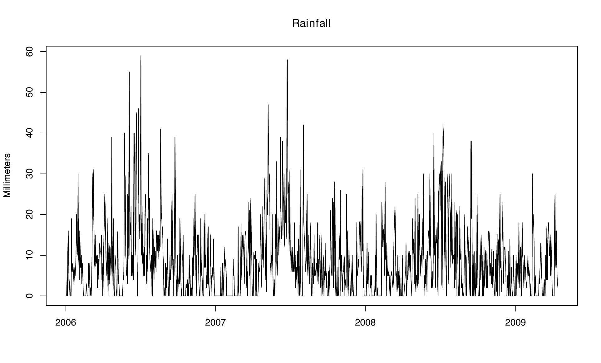
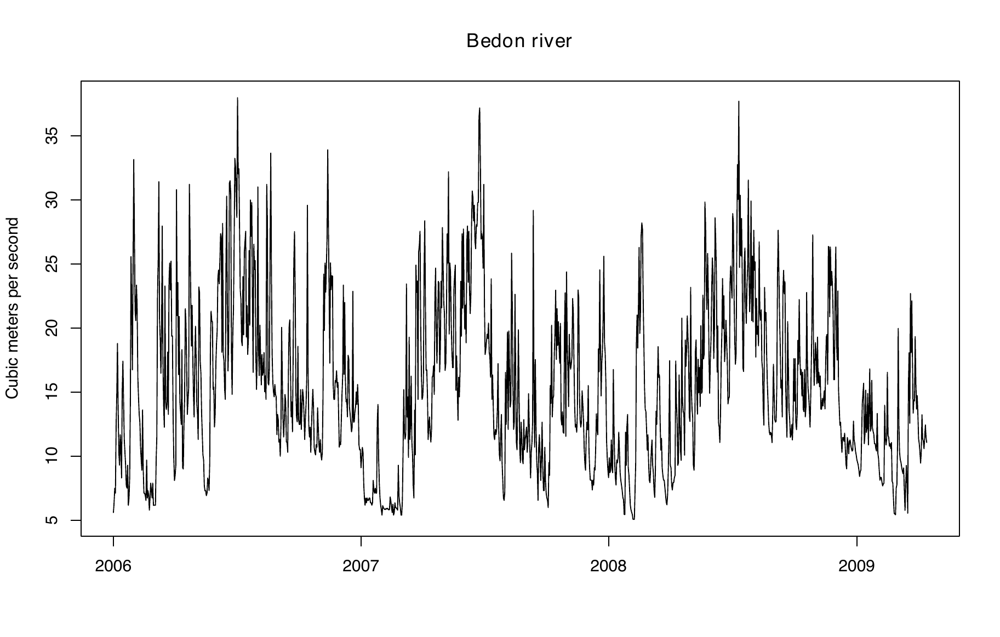
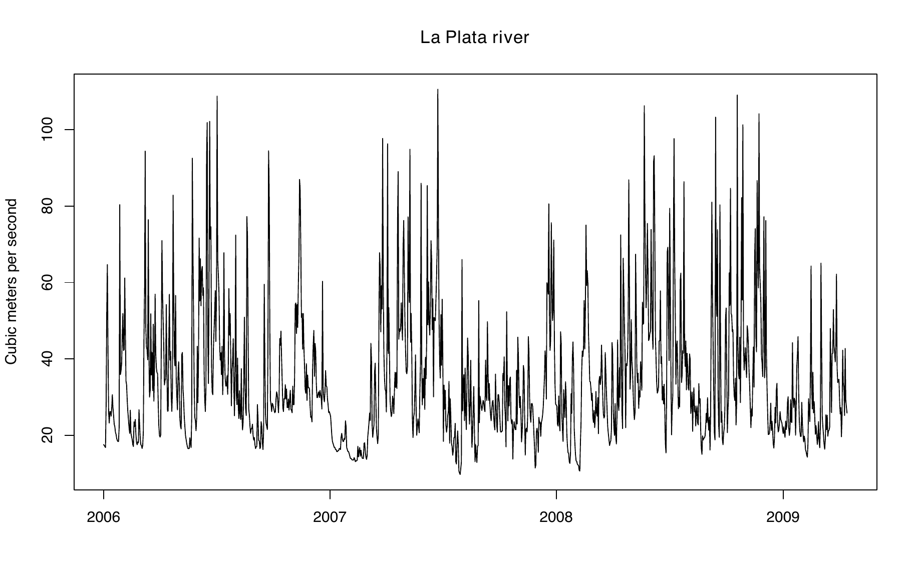
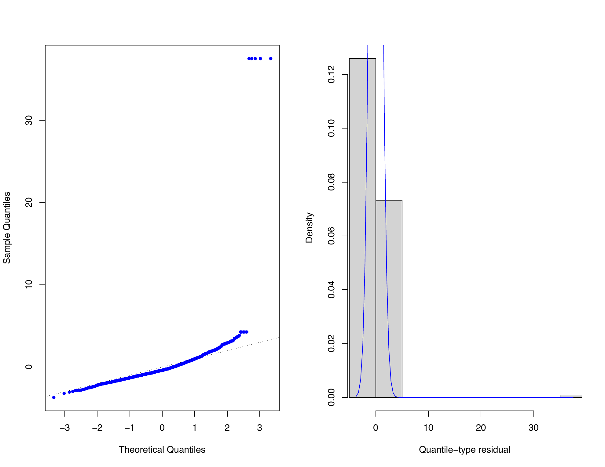
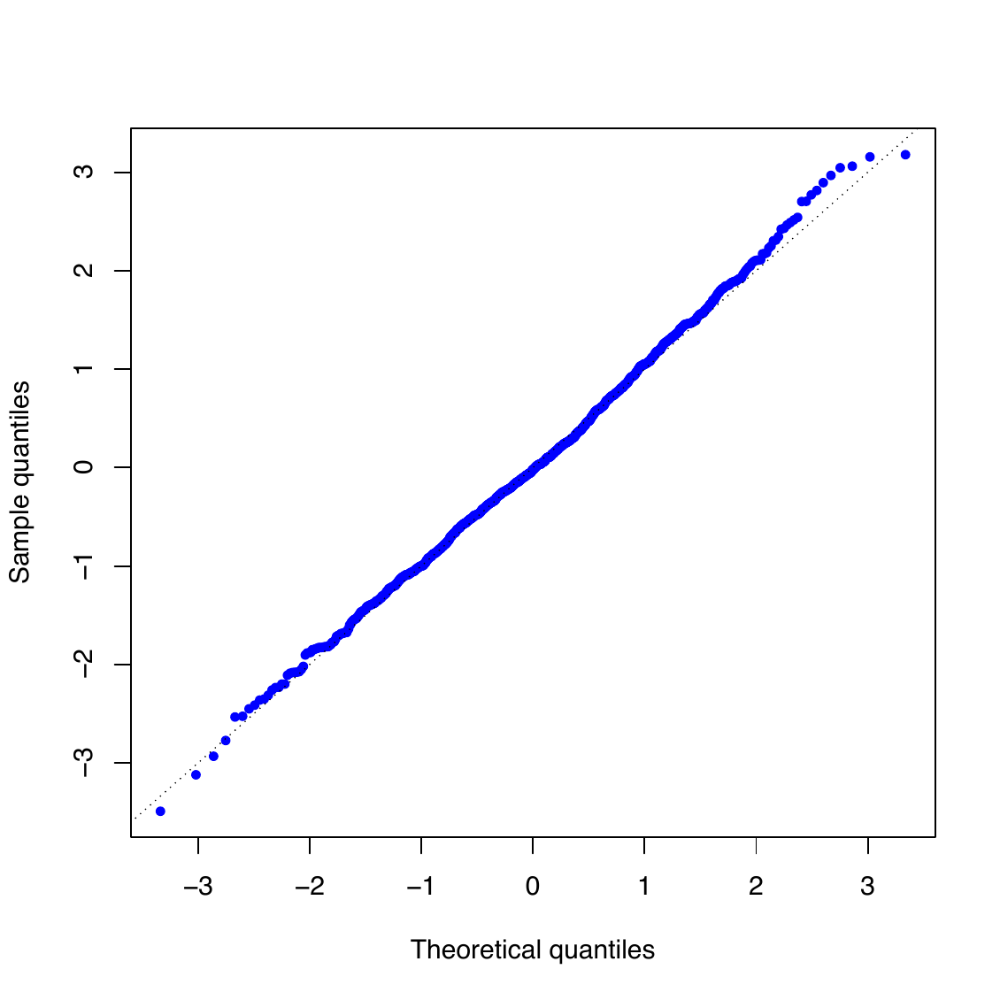
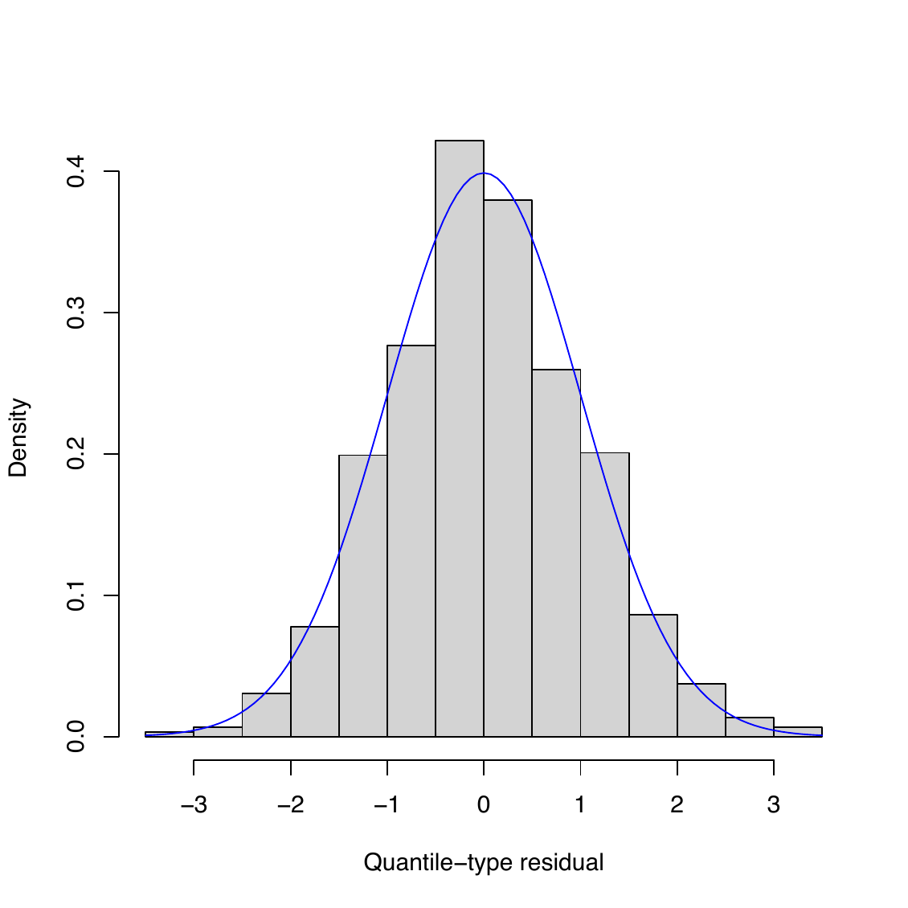
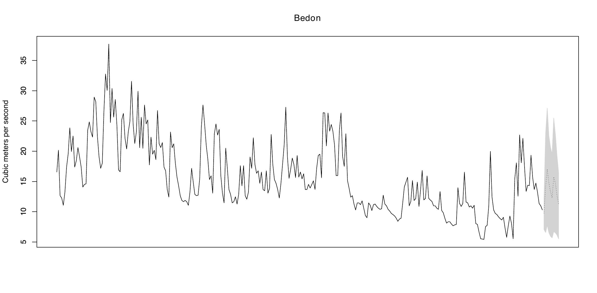
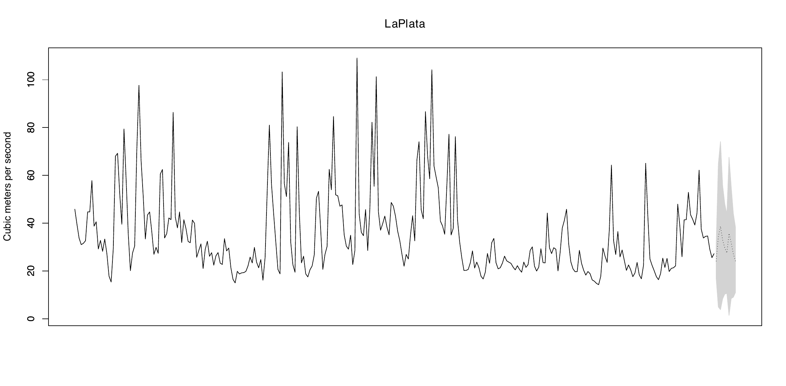

This paper introduces mtarm, an R package for Bayesian estimation, inference, and forecasting in multivariate Threshold Autoregressive (TAR) models. The package supports both standard m-step-ahead forecasting from a single model fit and rolling-origin forecast evaluation without repeated model re-estimation. These models provide a flexible framework for analyzing nonlinear multivariate time series and encompass important special cases such as multivariate Self-Exciting Threshold Autoregressive (SETAR) models and Vector Autoregressive (VAR) models. The package supports a broad class of innovation distributions beyond the Gaussian assumption, including the Student-t, slash, symmetric hyperbolic, Laplace, contaminated normal, skew-normal, and skew-t distributions, thereby accommodating heavy tails, skewness, and other forms of non-normality frequently observed in practice. Inference is performed within a Bayesian framework using a Markov chain Monte Carlo (MCMC) algorithm that jointly estimates all model parameters, except for the number of regimes. The resulting posterior samples can be readily summarized, visualized, and diagnosed through integration with the coda package. For model assessment and selection, mtarm implements several predictive and information-based criteria, including the Deviance Information Criterion (DIC), the Watanabe–Akaike Information Criterion (WAIC), the log-score, the Continuous Ranked Probability Score (CRPS), the Energy Score (ES), and a variety of forecast accuracy measures. Additional functionality includes graphical goodness-of-fit diagnostics and simulation of multivariate TAR processes. The capabilities of mtarm are illustrated through the analysis and forecasting of two real multivariate time series.
Threshold Autoregressive (TAR) models were originally introduced by (Tong 1978, 1983) and have become one of the most widely used frameworks for modeling nonlinear dynamics in time series. By allowing the autoregressive structure to vary across regimes defined by threshold variables, TAR models can effectively capture structural changes, asymmetric adjustments, and regime-switching behavior. In contrast, linear autoregressive (AR) models—obtained as a special case of a TAR model with a single regime—are generally unable to adequately represent such features. Owing to their flexibility, TAR models have been successfully applied in a wide range of fields. In economics, they have been used to model gross national product (GNP) growth, unemployment, and inflation rates; in finance, to analyze stock returns and insurance pricing; in hydrology, to describe river flow dynamics; and in ecology, to study annual records of lynx trapping, among many other applications (see (Tong 1990, 2011, 2015; Hansen 2011; Chen et al. 2011)).
Within the TAR family, several important extensions have been developed. In the univariate setting, these include the incorporation of moving average components through Threshold Autoregressive Moving Average (TARMA) models (Tong 1990), the introduction of conditional heteroscedasticity via Threshold Autoregressive Conditional Heteroscedastic (TAR-ARCH) models (Liu et al. 1997), and recent advances in testing for threshold effects based on supremum Lagrange multiplier procedures (Goracci et al. 2023; Giannerini et al. 2024). In the multivariate context, (Tsay 1998) introduced the Multivariate Threshold Autoregressive (MTAR) model, which was subsequently extended to the Threshold Vector Autoregressive Moving Average (TVARMA) framework by (Niglio and Vitale 2015). More recently, (Vanegas et al. 2025) further generalized the TAR models by allowing for non-Gaussian error distributions.
Despite the theoretical importance and wide applicability of TAR-type
models, their statistical implementation in R remains relatively
limited. For example, the package
tsDyn (Stigler 2018)
provides a well-established framework for nonlinear time series
analysis, including Self-Exciting Threshold Autoregressive (SETAR)
models. Estimation is based on conditional least squares, a frequentist
approach that typically assumes Gaussian innovations and determines
threshold values through grid-search optimization, which can become
computationally demanding in the presence of multiple thresholds or
high-dimensional settings. Likewise, the package
NTS (Liu et al. 2020)
supports the estimation of multivariate TAR models and includes tools
for simulation, prediction, and model identification. However, its
methodology is also rooted in a frequentist framework, relies on
Gaussian innovation assumptions, and offers limited flexibility for
accommodating alternative error distributions. More recently, the
package
tseriesTARMA
(Giannerini and Goracci 2024) expanded the range of available nonlinear
time series tools by implementing threshold ARMA models under a
frequentist paradigm. In contrast, the package
BAYSTAR (Chen et al.
2022) adopts a Bayesian perspective, providing inference for univariate
TAR models with flexible prior specifications. Nevertheless, its scope
is restricted to the univariate case.
However, existing software solutions remain fragmented, typically focusing exclusively on either univariate or multivariate time series. Moreover, most available implementations are restricted to two-regime models and do not naturally accommodate more complex multi-regime structures. To the best of our knowledge, the NTS package currently provides the most comprehensive framework for handling both univariate and multivariate TAR models with multiple regimes. However, its inferential procedures are limited by Gaussian innovation assumptions and do not support the broad class of non-Gaussian error distributions frequently encountered in practice. Such distributions arise naturally in applications involving financial returns, river flows, unemployment rates, and many other phenomena characterized by nonlinear and regime-dependent dynamics. As a result, there is a growing demand for a unified statistical framework that can simultaneously accommodate univariate and multivariate TAR models, allow for multiple regimes, and provide the flexibility to model non-Gaussian innovations. Such a framework would be particularly valuable in fields such as finance, economics, hydrology, and other disciplines where departures from normality and regime-switching behavior are common.
To address these limitations, we introduce
mtarm, a new R package
for the Bayesian analysis of multivariate TAR-type models. The package
is built upon the methodology developed by (Vanegas et al. 2025) and
extends the current R ecosystem by providing a flexible and unified
framework for Bayesian inference in TAR models. Specifically,
mtarm contributes in the
following ways:
Unified modeling framework. The package supports the estimation of multivariate TAR models and several important special cases, including Self-Exciting Threshold Autoregressive (SETAR) models and Vector Autoregressive (VAR) models, together with their univariate counterparts. This unified framework facilitates model comparison and allows users to seamlessly transition between linear and nonlinear specifications.
Flexible innovation distributions. In contrast to most existing implementations, which are restricted to Gaussian innovations, mtarm accommodates a broad class of multivariate distributions, including the Student-\(t\), slash, symmetric hyperbolic, Laplace, contaminated normal, skew-normal, and skew-\(t\) distributions. These distributions provide increased robustness to heavy tails, skewness, and other forms of non-normality commonly observed in real-world applications.
Bayesian inference and forecasting. All aspects of estimation, inference, and prediction are carried out within a Bayesian framework. Model parameters are estimated jointly through a Markov chain Monte Carlo (MCMC) algorithm, eliminating the need for the sequential grid-search procedures commonly employed in frequentist approaches. This strategy yields a coherent quantification of uncertainty through posterior distributions and naturally supports probabilistic forecasting. The package supports both standard \(m\)-step-ahead forecasting from a single model fit and rolling-origin forecast evaluation without repeated model re-estimation.
The remainder of the paper is organized as follows. Section 2 presents the statistical framework for multivariate TAR models and summarizes the Bayesian methodology implemented in mtarm. Section 3 describes the package architecture and its main functionalities through an empirical application involving rainfall and the flows of two rivers in Colombia. Section 4 further illustrates the use of the package through a second empirical application involving precipitation, temperature, and the flows of two rivers in Iceland.
Let \(\{\boldsymbol{\mathbf{Y}}_t\}_{t\geq 1}\) be the \(k\)-dimensional time series of interest (output), \(\{\boldsymbol{\mathbf{X}}_t\}_{t\geq 1}\) the \(r\)-dimensional time series of exogenous covariates, and \(\{Z_t\}_{t\geq 1}\) the one-dimensional threshold time series. We say that \(\{\boldsymbol{\mathbf{Y}}_t\}_{t\geq 1}\) follows a multivariate Threshold Autoregressive (TAR) model with \(l\) regimes, denoted \(\text{TAR}(l;\boldsymbol{\mathbf{p}},\boldsymbol{\mathbf{q}},\boldsymbol{\mathbf{d}})\), if \[\begin{equation} \label{mtar} \boldsymbol{\mathbf{Y}}_t=\sum_{j=1}^l I(Z_{t-h}\in(c_{j-1},c_j])\Big(\!\boldsymbol{\mathbf{\phi}}_0^{^{(j)}}\!\boldsymbol{\mathbf{D}}_t +\sum_{i=1}^{p_j}\boldsymbol{\mathbf{\phi}}_i^{^{(j)}}\boldsymbol{\mathbf{Y}}_{t-i} +\sum_{i=1}^{q_j}\boldsymbol{\mathbf{\beta}}_i^{^{(j)}}\boldsymbol{\mathbf{X}}_{t-i} +\sum_{i=1}^{d_j}\boldsymbol{\mathbf{\delta}}_i^{^{(j)}}Z_{t-i} +\boldsymbol{\mathbf{\epsilon}}_{t_j}\!\Big), \end{equation} \tag{1}\] where \(\boldsymbol{\mathbf{p}}=(p_1,\ldots,p_l)\), \(\boldsymbol{\mathbf{q}}=(q_1,\ldots,q_l)\) and \(\boldsymbol{\mathbf{d}}=(d_1,\ldots,d_l)\) are vectors of non-negative integers specifying the regime-dependent lag orders. Specifically, in Regime \(j\), \(p_j\) denotes the autoregressive order of the output series \(\{\boldsymbol{\mathbf{Y}}_t\}_{t\geq 1}\), \(q_j\) denotes the maximum lag of the exogenous series \(\{\boldsymbol{\mathbf{X}}_t\}_{t\geq 1}\), and \(d_j\) denotes the maximum lag of the threshold series \(\{Z_t\}_{t\geq 1}\). The parameter \(h\geq 0\) is the delay parameter, while \(\boldsymbol{\mathbf{c}}=(c_1,\ldots,c_{l-1})\) is the vector of threshold values satisfying \(-\infty=c_0 < c_1 < \cdots < c_{l-1}< c_l=\infty\). For each regime (\(j=1,\ldots,l\)), \(\boldsymbol{\mathbf{\phi}}_0^{^{(j)}}\) is the coefficient matrix associated with the deterministic component of the model, which can include an intercept, a linear or quadratic time trend, and seasonal effects. The matrices \(\boldsymbol{\mathbf{\phi}}_i^{^{(j)}}\), \(\boldsymbol{\mathbf{\beta}}_i^{^{(j)}}\), and \(\boldsymbol{\mathbf{\delta}}_i^{^{(j)}}\) denote the coefficients associated with the \(i\)-th lag of the response process \(\{\boldsymbol{\mathbf{Y}}_t\}_{t\geq 1}\), the exogenous process \(\{\boldsymbol{\mathbf{X}}_t\}_{t\geq 1}\), and the threshold process \(\{Z_t\}_{t\geq 1}\), respectively. The vector of deterministic regressors is given by \(\boldsymbol{\mathbf{D}}_t = (1,a(t),b(t))^{\!\top}\), where \(a(t) = t\) for a linear time trend and \(a(t)=(t,t^2)\) for a quadratic time trend. The seasonal component \(b(t)\) corresponds to the \(((t~\text{mod}~n_s)+1)\)-th row of \(\tilde{\boldsymbol{\mathbf{I}}}_{n_s}\), where \(n_s \ge 2\) denotes the number of seasonal periods, \(a~\text{mod}~b\) is the remainder obtained when dividing the integer \(a\) by the integer \(b\), and \(\tilde{\boldsymbol{\mathbf{I}}}_{n_s}\) is the \(n_s \times n_s\) identity matrix with its first column removed. Finally, for \(t=1,2,\ldots\) and \(j=1,\ldots,l\), the innovation vectors \(\boldsymbol{\mathbf{\epsilon}}_{t_j}\) are assumed to be independent \(k\)-dimensional random variables with location parameter \(\boldsymbol{\mathbf{0}}\), regime-specific scale matrix \(\boldsymbol{\mathbf{\Sigma}}_j\), and, depending on the chosen distribution, additional unknown parameters that are common across regimes and time. Furthermore, the innovations are assumed to be mutually independent and independent of both the exogenous process \(\{\boldsymbol{\mathbf{X}}_t\}_{t\geq 1}\) and the threshold process \(\{Z_t\}_{t\geq 1}\).
From the perspective of nonlinear dynamical systems, a multivariate TAR model can be interpreted as a stochastic piecewise-linear approximation to an unknown nonlinear vector process. Within each regime, the dynamics are governed by a linear VAR specification with regime-specific coefficients and innovation covariance matrices. However, the governing dynamics change whenever the threshold variable crosses a regime boundary, producing a globally nonlinear process in the sense of Tong’s threshold dynamical-systems framework (Tong 1990). This regime-dependent structure enables TAR models to capture features that are difficult to represent within a conventional linear VAR framework, including state-dependent persistence, regime-specific volatility patterns, asymmetric responses to shocks, and nonlinear impulse-response behavior. Moreover, threshold dynamics can generate richer forms of temporal dependence, such as limit cycles, time irreversibility, and non-Gaussian—potentially multimodal—stationary distributions. The flexibility of TAR models has led to their successful application in a wide range of fields. In economics, they have been used to study business-cycle asymmetries and nonlinear output dynamics (Potter 1995); in finance, to model nonlinear behavior in monetary and asset-price processes, including speculative bubble dynamics (Tsay 1998; Grynkiv and Stentoft 2018); and in environmental sciences, to characterize complex hydrological processes such as river-flow dynamics. These applications highlight the value of TAR models as a flexible framework for representing nonlinear and regime-dependent behavior in multivariate systems.
When the autoregressive order of \(\{\boldsymbol{\mathbf{Y}}_t\}_{_{t\geq 1}}\) and the maximum lags orders of \(\{\boldsymbol{\mathbf{X}}_t\}_{_{t\geq 1}}\) and \(\{Z_t\}_{_{t\geq 1}}\) are unknown, model selection can be performed using the Stochastic Search Variable Selection (SSVS) methodology of (George and McCulloch 1993, 1995, 1997). Under this approach, a vector of binary inclusion indicators, \(\boldsymbol{\mathbf{\zeta}}_j=(\zeta_{j,1},\ldots,\zeta_{j,p_j},\zeta_{j,p_j+1},\ldots,\zeta_{j,p_j+q_j},\zeta_{j,p_j+q_j+1},\ldots,\zeta_{j,p_j+q_j+d_j})\), is introduced for each regime, where \(\zeta_{j,i}\in\{0,1\}\) for each \(j=1,\ldots,l\) and \(i=1,\ldots,p_j,p_j+1,\ldots,p_j+q_j,p_j+q_j+1,\ldots,p_j+q_j+d_j\). The indicators determine whether the corresponding lagged effects are included in the model. For the autoregressive component, \(\zeta_{j,i}=0\) implies that \(\boldsymbol{\mathbf{\phi}}_i^{^{(j)}}=\mathbf{0}\), and therefore the \(i\)-th lag of \(\{\boldsymbol{\mathbf{Y}}_t\}_{t\geq 1}\) is excluded from Regime \(j\). Conversely, \(\zeta_{j,i}=1\) implies that \(\boldsymbol{\mathbf{\phi}}_i^{^{(j)}}\) is unrestricted and estimated as part of the MCMC algorithm. Analogously, for the exogenous component, \(\zeta_{j,p_j+i}=0\) implies \(\boldsymbol{\mathbf{\beta}}_i^{^{(j)}}=\mathbf{0}\), whereas \(\zeta_{j,p_j+i}=1\) allows \(\boldsymbol{\mathbf{\beta}}_i^{^{(j)}}\) to be estimated. Likewise, for the threshold component, \(\zeta_{j,p_j+q_j+i}=0\) implies \(\boldsymbol{\mathbf{\delta}}_i^{^{(j)}}=\mathbf{0}\), while \(\zeta_{j,p_j+q_j+i}=1\) permits \(\boldsymbol{\mathbf{\delta}}_i^{^{(j)}}\) to vary freely within the posterior sampling scheme. Consequently, the posterior distribution of \(\boldsymbol{\mathbf{\zeta}}_j\) provides a mechanism for identifying the relevant lagged effects of the response, exogenous, and threshold processes within each regime. In this way, the SSVS procedure simultaneously performs parameter estimation and regime-specific lag selection within the Bayesian framework.
Special cases of the model (1) include multivariate Self-Exciting Threshold Autoregressive (SETAR) models when \(h>0\) and \(Z_t \equiv Y_{m,t}\) for some \(m\in\{1,\ldots,k\}\) and all \(t\), where \(Y_{m,t}\) represents the \(m\)-th component of \(\boldsymbol{\mathbf{Y}}_t=(Y_{1,t},\ldots,Y_{k,t})^{\!\top}\); and Vector Autoregressive (VAR) models when \(l=1\).
This section presents two representative innovation distributions implemented in mtarm for modeling the error process in model (1); the remaining distributions are described in Appendix 5. Throughout this section, \(\boldsymbol{\mathbf{\mu}}=(\mu_1,\ldots,\mu_k)^{\!\top}\) and \(\boldsymbol{\mathbf{\Sigma}}\) denote the location vector and the positive-definite \(k\times k\) scale matrix, respectively. Most of the innovation distributions implemented in mtarm belong to the class of Gaussian scale mixtures (McNeil et al. 2015, sec. 6.2), a broad family that includes the Gaussian distribution as a special (degenerate) case. Relative to the Gaussian model, these distributions are capable of accommodating heavier tails and, in some cases, a greater concentration of probability mass around the center of the distribution. Consequently, they offer increased robustness to outliers and extreme observations while preserving a convenient hierarchical structure that facilitates Bayesian estimation and posterior computation.
Student-\(t\) distribution. If \(\boldsymbol{\mathbf{Y}}\sim\text{Student-}t_k(\boldsymbol{\mathbf{\mu}},\boldsymbol{\mathbf{\Sigma}},\nu)\) then its probability density function is given by (McNeil et al. (2015, example 6.7); Fang et al. (2018, 85)) \[\begin{equation*} f_{Y}(\boldsymbol{\mathbf{y}}|\boldsymbol{\mathbf{\mu}},\boldsymbol{\mathbf{\Sigma}},\nu)= \dfrac{\Gamma(\frac{\nu+k}{2})}{\Gamma(\frac{\nu}{2})(\nu\pi)^{\frac{k}{2}}|\boldsymbol{\mathbf{\Sigma}}|^{\frac{1}{2}}}\!\left(\!\!1+\frac{1}{\nu}(\boldsymbol{\mathbf{y}}-\boldsymbol{\mathbf{\mu}})^{\!\top}\boldsymbol{\mathbf{\Sigma}}^{-1}(\boldsymbol{\mathbf{y}}-\boldsymbol{\mathbf{\mu}})\!\!\right)^{\!\!-\frac{\nu+k}{2}},\qquad \nu>0. \end{equation*}\]
The multivariate Student-\(t\) distribution provides a flexible alternative to the Gaussian specification for modeling innovations in multivariate time series. Owing to its heavy-tailed nature, it can accommodate extreme observations more effectively than the Gaussian model, reducing the influence of outliers and improving robustness to departures from distributional assumptions (Lange et al. 1989; Abanto-Valle et al. 2010). The degree of robustness is governed by the degrees-of-freedom parameter, which controls tail heaviness and induces a smooth transition to the Gaussian distribution as its value increases (Kotz and Nadarajah 2004). In addition to its robustness properties, the multivariate Student-\(t\) distribution retains many of the attractive features of the multivariate normal distribution, including closure under linear transformations and a convenient hierarchical representation that facilitates Bayesian inference. At the same time, it offers greater flexibility for capturing heavy-tailed behavior and other forms of non-Gaussian dependence commonly encountered in practice (Abanto-Valle et al. 2012). These characteristics make the multivariate Student-\(t\) distribution particularly appealing for multivariate TAR models and other nonlinear regime-switching frameworks, where deviations from normality are often present.
Skew-\(t\) distribution. If \(\boldsymbol{\mathbf{Y}}\sim\text{S}t_k(\boldsymbol{\mathbf{\mu}},\boldsymbol{\mathbf{\Sigma}},\boldsymbol{\mathbf{\lambda}},\nu)\) then its probability density function is given by (Sahu et al. 2003, 136) \[f_{Y}(\boldsymbol{\mathbf{y}}|\boldsymbol{\mathbf{\mu}},\boldsymbol{\mathbf{\Sigma}},\boldsymbol{\mathbf{\lambda}},\nu)=2^k\dfrac{\Gamma\Big(\dfrac{\nu+k}{2}\Big)}{\Gamma\Big(\dfrac{\nu}{2}\Big)(\nu\pi)^{\!\frac{k}{2}}|\boldsymbol{\mathbf{\Sigma}}+\boldsymbol{\mathbf{D}}_{_{\!\!(\lambda)}}^2|^{\frac{1}{2}}} \!\bigg(\!\!1 + \dfrac{(\boldsymbol{\mathbf{y}}-\boldsymbol{\mathbf{\mu}})^{\!\top}\!(\boldsymbol{\mathbf{\Sigma}}+\boldsymbol{\mathbf{D}}_{_{\!\!(\lambda)}}^2)^{-1}\!(\boldsymbol{\mathbf{y}}-\boldsymbol{\mathbf{\mu}})}{\nu}\!\bigg)^{\!\!-\frac{\nu+k}{2}}{\rm Pr}(\boldsymbol{\mathbf{V}}>0),\] where \[\boldsymbol{\mathbf{V}}\! \sim\! \text{Student-}t_k\!\Big(\!\boldsymbol{\mathbf{D}}_{_{\!\!(\lambda)}}\!(\boldsymbol{\mathbf{\Sigma}}+\boldsymbol{\mathbf{D}}_{_{\!\!(\lambda)}}^2\!)^{-1}\!(\boldsymbol{\mathbf{y}}-\boldsymbol{\mathbf{\mu}}),\!\dfrac{\nu\!+\!(\boldsymbol{\mathbf{y}}-\boldsymbol{\mathbf{\mu}})^{\!\top}\!(\boldsymbol{\mathbf{\Sigma}}\!+\!\boldsymbol{\mathbf{D}}_{_{\!\!(\lambda)}}^2\!)^{-1}\!(\boldsymbol{\mathbf{y}}-\boldsymbol{\mathbf{\mu}})}{\nu+k}\!\big(\boldsymbol{\mathbf{I}}_k\!-\!\boldsymbol{\mathbf{D}}_{_{\!\!(\lambda)}}\!(\boldsymbol{\mathbf{\Sigma}}+\boldsymbol{\mathbf{D}}_{_{\!\!(\lambda)}}^2\!)^{-1}\!\boldsymbol{\mathbf{D}}_{_{\!\!(\lambda)}}\!\big),\nu+k\!\Big).\]
In this parametrization, the vector \(\boldsymbol{\mathbf{\lambda}} = (\lambda_1,\ldots,\lambda_k)^{\top}\) acts as a directional skewness parameter that determines both the magnitude and orientation of departures from symmetry, while the degrees-of-freedom parameter (\(\nu>0\)) controls tail heaviness. When \(\boldsymbol{\mathbf{\lambda}}={\bf 0}\), the distribution reduces to the multivariate Student-\(t\) distribution with \(\nu\) degrees of freedom; conversely, as \(\nu\to\infty\), it converges to the multivariate skew-normal distribution (Sahu et al. 2003, 133). The multivariate skew-\(t\) distribution may therefore be viewed as a flexible extension of both the Student-\(t\) and skew-normal families, combining heavy-tailed behavior with directional asymmetry. The parameter \(\boldsymbol{\mathbf{\lambda}}\) allows the distribution to capture systematic departures from symmetry, while \(\nu\) regulates the probability of extreme observations. This dual capacity to model skewness and heavy tails makes the skew-\(t\) distribution particularly attractive for time-series applications in which innovations exhibit asymmetric behavior and occasional large shocks. Such features are frequently encountered in financial, economic, and environmental data, as well as in stochastic-volatility models and Bayesian VAR frameworks with non-Gaussian innovations (Abanto-Valle et al. 2015; Karlsson et al. 2023).
The value of \(l\) is assumed to be known. The model parameters are \(h\), \(\boldsymbol{\mathbf{c}}=(c_1,\ldots,c_{l-1})\), \(\boldsymbol{\mathbf{\theta}}_1,\ldots,\boldsymbol{\mathbf{\theta}}_l\), \(\boldsymbol{\mathbf{\Sigma}}_1,\ldots,\boldsymbol{\mathbf{\Sigma}}_l\), \(\boldsymbol{\mathbf{\zeta}}_1,\ldots,\boldsymbol{\mathbf{\zeta}}_l\), \(\boldsymbol{\mathbf{\lambda}}\) and \(\nu\), where \(\boldsymbol{\mathbf{\theta}}_j=(\boldsymbol{\mathbf{\phi}}_0^{^{(j)}},\boldsymbol{\mathbf{\phi}}_1^{^{(j)}},\ldots,\boldsymbol{\mathbf{\phi}}_{p_j}^{^{(j)}},\boldsymbol{\mathbf{\beta}}_1^{^{(j)}},\ldots,\boldsymbol{\mathbf{\beta}}_{q_j}^{^{(j)}},{\delta}_1^{^{(j)}},\ldots,{\delta}_{d_j}^{^{(j)}})^{\!\top}\) is the regression parameter matrix in Regime \(j\), whose dimension is \(s_j\times k\), in which \(s_j=1 + (p_j\times k) + (q_j\times r) + d_j\). Henceforth, we will refer to \(\boldsymbol{\mathbf{\theta}}_1,\ldots,\boldsymbol{\mathbf{\theta}}_l\) and \(\boldsymbol{\mathbf{\Sigma}}_1,\ldots,\boldsymbol{\mathbf{\Sigma}}_l\) as location and scale parameters, respectively. The prior distribution is the following \[\pi(h,\boldsymbol{\mathbf{c}},\boldsymbol{\mathbf{\theta}}_1,\ldots,\boldsymbol{\mathbf{\theta}}_l,\boldsymbol{\mathbf{\Sigma}}_1,\ldots,\boldsymbol{\mathbf{\Sigma}}_l,\boldsymbol{\mathbf{\zeta}}_1,\ldots,\boldsymbol{\mathbf{\zeta}}_l,\boldsymbol{\mathbf{\lambda}},\nu)=\pi(h)\pi(\boldsymbol{\mathbf{c}})\pi(\nu)\pi(\boldsymbol{\mathbf{\lambda}})\prod\limits_{j=1}^l \pi(\boldsymbol{\mathbf{\theta}}_j|\boldsymbol{\mathbf{\Sigma}}_j,\boldsymbol{\mathbf{\zeta}}_j)\pi(\boldsymbol{\mathbf{\Sigma}}_j)\pi(\boldsymbol{\mathbf{\zeta}}_j),\] where
For the threshold vector we take \[\pi(\boldsymbol{\mathbf{c}})\propto \begin{cases} 1 &\text{\rm if}\quad q_z(\alpha_0)<c_1<\ldots<c_{l-1}<q_z(\alpha_1),\\[2mm] 0 &\text{\rm otherwise}, \end{cases}\] in which \(q_z(\alpha)\) represents the \(100(\alpha)\%\) percentile of the realization of \(\{Z_t\}_{t\geq 1}\), and \(0\leq \alpha_0<\alpha_1\leq 1\). This prior is uniform over ordered thresholds constrained to lie between percentiles of the threshold variable, thereby ensuring that the regime boundaries remain within a data-relevant region while excluding implausible configurations corresponding to extreme or nearly empty regimes;
For the delay parameter we take \[\pi(h)\propto I\{h_{\rm min},\ldots,h_{\rm max}\},\] in which \(h_{\rm min}\) and \(h_{\rm max}\) are integer values such that \(0\leq h_{\rm min}\leq h_{\rm max}\). This specification induces a discrete uniform prior over a restricted set of plausible delays, assigning equal prior probability to all candidate values within the range while excluding lag lengths that are empirically unrealistic or theoretically implausible;
For the regime-specific scale matrices we assume \[\pi(\boldsymbol{\mathbf{\Sigma}}_j) = {\rm W}^{-1}(\boldsymbol{\mathbf{\Omega}}_{0j},\tau_{0j}), \qquad j=1,\ldots,l,\] in which \({\rm W}^{-1}(\boldsymbol{\mathbf{\Omega}},\tau)\) represents the inverse Wishart distribution (see, for instance, Gupta and Nagar (1999, sec. 3.4)), with \(\boldsymbol{\mathbf{\Omega}}\) a \(k\times k\) positive-definite matrix and \(\tau> k-1\). This prior regularizes the regime-specific covariance matrices by shrinking \(\boldsymbol{\mathbf{\Sigma}}_j\) toward \(\boldsymbol{\mathbf{\Omega}}_{0j}/(\tau_{0j}-k-1)\), so that \(\boldsymbol{\mathbf{\Omega}}_{0j}\) encodes a plausible volatility–correlation structure for Regime \(j\), while \(\tau_{0j}\) determines the strength of the shrinkage. Moreover, the specification preserves conjugacy with the likelihood, thereby facilitating posterior simulation of \(\boldsymbol{\mathbf{\Sigma}}_j\) and contributing to computational efficiency;
For the vector of inclusion indicators in Regime \(j\), \(\boldsymbol{\mathbf{\zeta}}_j = (\zeta_{j,1},\ldots,\zeta_{j,p_j+q_j+d_j})^\top\), we assume \[\pi(\boldsymbol{\mathbf{\zeta}}_j) = \prod_{i=1}^{p_j+q_j+d_j}\rho_{0j}^{\zeta_{j,i}}(1-\rho_{0j})^{1-\zeta_{j,i}}, \qquad j=1,\ldots,l,\] with \(\rho_{0j}\in(0,1)\). This specification corresponds to independent Bernoulli priors with a common inclusion probability \(\rho_{0j}\), so that \(\rho_{0j}\) directly governs the expected proportion of active coefficients, and thus the overall sparsity level in Regime \(j\);
\(\pi(\boldsymbol{\mathbf{\theta}}_j\mid\boldsymbol{\mathbf{\Sigma}}_j,\boldsymbol{\mathbf{\zeta}}_j)\) is \({\rm MN}_{s_{j\zeta},k}(\boldsymbol{\mathbf{\mu}}_{0j\zeta},\boldsymbol{\mathbf{\Delta}}_{0j\zeta},\boldsymbol{\mathbf{\Sigma}}_j)\) for \(j=1,\ldots,l\), in which \[s_{j\zeta} = 1 + k\sum_{i=1}^{p_j}\zeta_{j,i} + r\sum_{i=1}^{q_j}\zeta_{j,p_j+i} + \sum_{i=1}^{d_j}\zeta_{j,p_j+q_j+i},\] and \({\rm MN}_{s,k}(\boldsymbol{\mathbf{\mu}},\boldsymbol{\mathbf{\Delta}},\boldsymbol{\mathbf{\Sigma}})\) represents the matrix Gaussian distribution (see, for instance, Gupta and Nagar (1999, chap. 2)), with \(\boldsymbol{\mathbf{\mu}}\) (\(s\times k\)) as its location parameter matrix, and the positive-definite matrices \(\boldsymbol{\mathbf{\Delta}}\) (\(s\times s\)) and \(\boldsymbol{\mathbf{\Sigma}}\) (\(k\times k\)) as its scale parameters. This matrix-normal prior jointly regularizes the active coefficients in Regime \(j\) towards \(\boldsymbol{\mathbf{\mu}}_{0j\zeta}\), with \(\boldsymbol{\mathbf{\Delta}}_{0j\zeta}\) governing their prior dependence. The dependence on \(\boldsymbol{\mathbf{\Sigma}}_j\) ensures scale invariance across equations and preserves conjugacy with the likelihood, thereby streamlining posterior simulation;
For the skew-normal and skew-\(t\) cases, the skewness vector \(\boldsymbol{\mathbf{\lambda}}\) is assigned the prior \(\pi(\boldsymbol{\mathbf{\lambda}}) = {\rm Normal}_k(\boldsymbol{0},\boldsymbol{\Lambda}_0)\), where \(\boldsymbol{\mathbf{\Lambda}}_0\) is a positive-definite \(k\times k\) matrix. This prior centres the innovations at symmetry (\(\boldsymbol{\mathbf{\lambda}}=\boldsymbol{\mathbf{0}}\)) while \(\boldsymbol{\mathbf{\Lambda}}_0\) controls how strongly we shrink towards symmetry and how large skewness is allowed a priori; and
Note that this prior depends on the assumed error distribution: \(\pi(\nu)\) is
for the Student-\(t\), symmetric hyperbolic, and skew-\(t\) cases, \({\rm Uniform}(\gamma_{0},\eta_{0})\);
for the Slash case, \({\rm Gamma}(\gamma_{0},\eta_{0})\), that is, \(\pi(\nu)\propto\nu^{\gamma_{0}-1}\exp(-\eta_{0}\nu)I_{\nu}(0,\infty)\); and
for the contaminated normal case, \(\pi(\nu_1)\pi(\nu_2)\), in which \(\pi(\nu_1)\) is \({\rm Beta}(\gamma_{01},\eta_{01})\), that is, \(\pi(\nu_1)\propto \nu_1^{\gamma_{01}-1}(1-\nu_1)^{\eta_{01}-1}I_{\nu_1}(0,1)\) and \(\pi(\nu_2)\) is \(\text{Truncated\,Gamma}(\gamma_{02},\eta_{02};(0,1))\), that is, \(\pi(\nu_2)\propto\nu_2^{\gamma_{02}-1}\exp(-\eta_{02}\nu_2)I_{\nu_2}(0,1)\).
These priors keep the parameters on their natural support and in plausible ranges, and they control the degree of tail thickness and hence the robustness of the innovations to extreme observations.
The package mtarm adopts the following simplified specification of the prior distributions. For each \(j=1,\ldots,l\): \(\boldsymbol{\mathbf{\Omega}}_{0j}={\bf I}_{k}\otimes\omega_0\), \(\tau_{0j}=\tau_{0}\), \(\boldsymbol{\mathbf{\mu}}_{0j\zeta}={\bf 1}_{s_{j\zeta},k}\otimes \mu_0\), \(\boldsymbol{\mathbf{\Delta}}_{0j\zeta}={\bf I}_{s_{j\zeta}}\otimes\delta_{0}^{s_j/s_{j\zeta}}\) and \(\rho_{0j}=\rho_0\). Moreover, \(\boldsymbol{\mathbf{\Lambda}}_0={\bf I}_{k}\otimes\lambda_{0}\), where \({\bf 1}_{m,n}\) denotes the \(m\times n\) matrix of ones and \(\otimes\) denotes Kronecker product.
This section demonstrates the main capabilities of
mtarm through a case
study based on the bivariate time series contained in the riverflows
dataset (see Table 1).
The dataset was previously analyzed by (Calderón and Nieto 2017) and
(Vanegas et al. 2025), making it a useful benchmark for illustrating the
package’s methodology and workflow. Throughout this section, the
analysis is presented in a step-by-step manner, showing how the core
functions of mtarm can
be combined to perform model specification, estimation, model
comparison, diagnostic assessment, and forecasting within a unified
Bayesian framework. The objective is to study the dynamic relationship
between rainfall and river flows over the period from January 1, 2006,
to April 14, 2009. Rainfall, measured in millimeters (\(mm\)), was
recorded at the San Juan meteorological station and is denoted by
(\(Z_t\)). River flows, measured in cubic meters per second (\(m^3\!/\!s\)),
were recorded at two hydrological stations: the Bedon River flow
(\(Y_{1,t}\)) at El Trebol station and the La Plata River flow (\(Y_{2,t}\))
at Villalosada station. The San Juan station is located at an elevation
of 2400 meters above sea level, whereas the El Trebol and Villalosada
stations are situated at 1720 and 1300 meters, respectively. All
stations are located in a dry equatorial region of Colombia, where
hydrological and meteorological conditions are relatively stable,
allowing for a clearer assessment of the nonlinear dynamic relationships
captured by TAR models. The data were provided by the Colombian
Institute of Hydrology, Meteorology and Environmental Studies (IDEAM).
Missing observations were imputed using the methodology proposed by
(Calderón and Nieto 2017).



| Column | Role | Description |
|---|---|---|
Date |
Labels for time points | Dates when measurements were taken |
Rainfall |
Threshold series | Rainfall, in \(mm\) |
Bedon |
First component of the output series | Bedon river flow, in \(m^3\!/\!s\) |
LaPlata |
Second component of the output series | La Plata river flow, in \(m^3\!/\!s\) |
Figure 1 displays the three time series described above. A clear association can be observed between rainfall and river flows: periods of elevated precipitation tend to coincide with increased river discharge, particularly in the Bedon River, whereas periods of low rainfall are generally associated with reduced flow levels. This relationship appears less pronounced for the La Plata River, suggesting that the hydrological response to precipitation may differ between the two river systems. Overall, these patterns indicate a strong dependence of river discharge on rainfall and suggest that the underlying dynamics may vary across hydrological conditions. Such behavior is consistent with the presence of threshold effects in the river-flow dynamics. In particular, the relationship between rainfall and river discharge may change when precipitation exceeds or falls below certain critical levels, giving rise to distinct dynamic regimes. This possibility motivates the use of a regime-switching framework. The multivariate TAR model is especially well suited to this setting, as it allows the joint dynamics of the Bedon and La Plata river flows to evolve differently across rainfall regimes. To reproduce this exploratory analysis, the following code can be used to generate the corresponding plots:
> data(riverflows)
> str(riverflows)
Classes ‘tbl_df’, ‘tbl’ and 'data.frame': 1200 obs. of 4 variables:
$ Date : Date, format: "2006-01-01" "2006-01-02" ...
$ Bedon : num 5.6 6.36 7.5 7.11 12.39 ...
$ LaPlata : num 17.6 17.3 17.1 16.8 28.5 ...
$ Rainfall: num 0 0 0 4 0 ...
>
> dev.new()
> par(mfrow=c(3,1))
> with(riverflows,{plot(Date, Rainfall, type="l", lty=1, col="black", xlab="",
+ ylab="Millimeters", main="Rainfall")
+ plot(Date, Bedon, type="l", lty=1, col="black", xlab="",
+ ylab="Cubic meters per second", main="Bedon river")
+ plot(Date, LaPlata, type="l", lty=1, col="black", xlab="",
+ ylab="Cubic meters per second", main="La Plata river")})> args(mtar)
function(formula, data, subset, Intercept=TRUE, trend=c("none","linear","quad"),
nseason=NULL, ars=ars(), row.names, dist=dist=c("Gaussian","Student-t",
"Hyperbolic","Laplace","Slash","Contaminated normal","Skew-Student-t",
"Skew-normal"), prior=list(), n.sim=500, n.burnin=100, n.thin=1,
ssvs=FALSE, setar=NULL, progress=TRUE, ...)The routine mtar() performs Bayesian estimation in multivariate TAR
models, including SETAR and VAR models, and their univariate versions,
as described by (Vanegas et al. 2025). In that routine, the user can
specify several features of both the TAR model to be fitted to the data
and the MCMC algorithm to be used to draw a sample from the posterior
distribution of the model parameters. Some of those features are the
following: \((i)\) components of the model, that is, the output time
series, the threshold time series, and the exogenous time series; \((ii)\)
number of regimes; \((iii)\) the autoregressive order for
\(\{\boldsymbol{\mathbf{Y}}_t\}_{_{t\geq 1}}\) and the maximum lags for
\(\{\boldsymbol{\mathbf{X}}_t\}_{_{t\geq 1}}\) and \(\{Z_t\}_{_{t\geq 1}}\)
within each regime; \((iv)\) noise process distribution; \((v)\)
hyperparameter values; and \((vi)\) chain size, thinning interval and
burn-in period for the MCMC algorithm. The main arguments in the routine
mtar() are the following:
formula. This Formula-type argument allows us to
specify the output time series, the threshold time series (if any),
and the exogenous time series (if any). Formula-type objects provided
by the package Formula (Zeileis and Croissant (2010)) extend the
base class formula by allowing for multiple responses and multiple
parts of regressors. For example,
formula =\(\sim\)y1 + y2 + y3 | z | x1 + x2 indicates the
following: \((i)\) the output time series,
\(\{\boldsymbol{\mathbf{Y}}_t\}_{_{t\geq 1}}\), is tridimensional and
its realization is composed of the columns named y1, y2 and y3;
\((ii)\) the realization of the threshold time series,
\(\{Z_t\}_{_{t\geq 1}}\), is the column named z; and \((iii)\) the
exogenous time series, \(\{\boldsymbol{\mathbf{X}}_t\}_{_{t\geq 1}}\),
is bidimensional and its realization is composed of the columns named
x1 and x2. The columns named y1, y2, y3, z, x1 and x2
are assumed to be included in the data.frame specified in the argument
data in the call to the routine mtar(). Indeed, if the
data.frame-type object specified in the argument data contains only
the variables comprising the output time series, a VAR(p) model can
be specified by formula = \(\sim .\)
ars. This list-type argument allows us to specify
values for \(l\) (number of regimes),
\(\boldsymbol{\mathbf{p}}=(p_1,\ldots,p_l)\),
\(\boldsymbol{\mathbf{q}}=(q_1,\ldots,q_l)\) and
\(\boldsymbol{\mathbf{d}}=(d_1,\ldots,d_l)\). The helper function
ars() simplifies the model setup specification in ars. For
example, ars(nregim=3,p=2) sets a TAR model with 3 regimes and an
autoregressive order of 2 within each regime. Similarly,
ars(nregim=3,p=2,q=3) sets a TAR model with 3 regimes, an
autoregressive order of 2 within each regime, and a maximum lag of 3
for the exogenous time series within each regime. Moreover,
ars(nregim=3, p=c(1,2,1),``q=c(2, 0,3), d=c(1,1)) indicates the
following: \((i)\) the number of regimes is \(3\); \((ii)\) the
autoregressive order in the first, second and third regimes is \(1\),
\(2\) and \(1\), respectively; \((iii)\) the maximum lag for the exogenous
time series in the first, second and third regimes is \(2\), \(0\) and
\(3\), respectively; \((iv)\) the maximum lag for the threshold time
series in the first, second and third regimes is \(1\), \(1\) and \(0\),
respectively. The inclusion of p in ars() is mandatory, whereas
q and d are optional. Indeed, when a threshold series is specified
in the argument formula, the inclusion of d becomes relevant, but
it is not necessary. In addition, if q/d is missing, then ars()
assumes that the maximum lag for the exogenous/threshold series is \(0\)
in all regimes.
data. A data.frame-type object with rows
representing time points, arranged ascendingly according to the time
and containing at least the following columns: \((i)\) all those used to
specify the TAR model in the argument formula, that is, those
composing the output time series, the threshold time series (if any),
and the exogenous time series (if any); \((ii)\) that specified in the
optional argument row.names to label the time points; \((iii)\) those
utilized in the optional argument subset to choose a subset of the
rows of the data.frame to be used in the fitting process. If the
argument data is missing, then the columns are taken from
environment(formula), typically the environment from which the
routine mtar() is called.
Intercept. This logical-type argument allows us to
specify whether there are intercept terms in the model, that is, if
there are \(\phi_0^{^{(j)}}\neq 0\) for \(j=1,\ldots,l\). By default,
Intercept is set to TRUE.
trend. This character string allows users to specify
the degree of a deterministic time trend to be included in each
regime. The available options are: linear trend (“linear”), quadratic
trend (“quadratic”), and no time trend (“none”). By default, trend
is set to “none”.
nseason. This integer value allows us to specify the
number of seasonal periods. If nseason is specified then nseason-1
seasonal dummies are added to the regressors within each regime. As
described in section 2.1,
those seasonal dummies are obtained by vertically stacking several
nseason\(\times\) nseason identity matrices with their first column
removed.
dist. A character-type argument that allows us to
specify a multivariate distribution to describe the noise process
behavior. Available options are: Gaussian (“Gaussian”), Student-\(t\)
(“Student-t”), Slash (‘‘Slash’’), symmetric Hyperbolic
(‘‘Hyperbolic’’), contaminated normal (‘‘Contaminated normal’’),
Laplace (‘‘Laplace’’), skew-normal (‘‘Skew-normal’’) and Skew-\(t\)
(‘‘Skew-Student-t’’). By default, dist is set to ‘‘Gaussian’’.
prior. A list-type argument that allows us to specify the hyperparameter values described in section 2.3. By default, they are set to the following values, which ensure non-informative prior distributions: \(h_{\rm min}=0\), \(h_{\rm max}=3\), \(\alpha_0=0\), \(\alpha_1=1\), \(\omega_0=10^{-9}\), \(\tau_0=k\), \(\mu_0=0\), \(\delta_0=10^9\), \(\rho_0=0.5\), \(\lambda_0=10^9\), and
for the Student-\(t\) and skew-\(t\) cases, \(\gamma_{0}=1\) and \(\eta_{0}=100\);
for the Slash case, \(\gamma_{0}=10^{-9}\) and \(\eta_{0}=10^{-9}\);
for the contaminated normal case, \(\gamma_{01}=10^{-9}\), \(\eta_{01}=10^{-9}\), \(\gamma_{02}=10^{-9}\) and \(\eta_{02}=10^{-9}\);
for the symmetric hyperbolic case, \(\gamma_{0}=0.1\) and \(\eta_{0}=4\).
For example,
prior=list(hmin=0,hmax=3,theta0=0,delta0=1e+09,omega0=1e-09,tau0=k)
indicates that \(h_{\rm min}\), \(h_{\rm max}\), \(\theta_0\), \(\delta_0\),
\(\omega_0\) and \(\tau_0\) are set to \(0\), \(3\), \(0\), \(10^9\), \(10^{-9}\)
and \(k\), respectively, while the other hyperparameters are set to
their default values. Similarly, prior=list(hmax=5) indicates that
\(h_{\rm max}\) is set to \(5\), whereas the other hyperparameters are set
to their default values. Finally, prior=list(hmin=3,hmax=3)
indicates that the delay parameter \(h\) is known and equal to \(3\). The
routine mtar() uses the helper function priors() to validate the
argument prior. Practical guidance on selecting the hyperparameters
that determine the bounds of the delay and threshold parameters has
been added to Appendix 6.
n.burnin, n.sim, n.thin. These integer-type
arguments allow us to specify the number of iterations that the
MCMC-type algorithm must perform, where n.sim, n.thin and
n.burnin represent, respectively, the chain size, the thinning
interval, and the length of the burn-in period. Hence, the MCMC-type
algorithm performs n.burnin + n.sim \(\times\) n.thin
iterations, from which n.sim iterations are returned, so that
n.burnin + n.sim \(\times\) (n.thin - 1) are discarded. The
n.sim iterations that the routine mtar() returns correspond to
those at the following positions:
| 1 | n.burnin + 1, |
| 2 | n.burnin + 1 + (1 \(\times\) n.thin), |
| 3 | n.burnin + 1 + (2 \(\times\) n.thin), |
| ⋮ | ⋮ |
n.sim |
n.burnin + 1 + ((n.sim - 1) \(\times\) n.thin). |
ssvs. If ssvs=TRUE is specified, then the
Stochastic Search Variable Selection (SSVS) procedure is applied to
identify relevant lags of the output, exogenous (if any), and
threshold (if any) series. As a consequence, the components of
\(\boldsymbol{\mathbf{\zeta}}_1,\ldots,\boldsymbol{\mathbf{\zeta}}_l\)
are estimated as part of the MCMC-type algorithm. The length and
structure of each \(\boldsymbol{\mathbf{\zeta}}_j\) depends on the
argument ars. Specifically, for \(j=1,...,l\),
\(\boldsymbol{\mathbf{\zeta}}_j\) is a vector combining three blocks:
\((\zeta_{j,1},...,\zeta_{j,p_j})\),
\((\zeta_{j,p_j+1},...,\zeta_{j,p_j+q_j})\), and
\((\zeta_{j,p_j+q_j+1},\ldots,\zeta_{j,p_j+q_j+d_j})\), so that
\(\boldsymbol{\mathbf{\zeta}}_j = (\zeta_{j,1},...,\zeta_{j,p_j}, \zeta_{j,p_j+1},...,\zeta_{j,p_j+q_j}, \zeta_{j,p_j+q_j+1},...,\zeta_{j,p_j+q_j+d_j})\).
If ssvs=FALSE then
\(\boldsymbol{\mathbf{\zeta}}_1,\dots,\boldsymbol{\mathbf{\zeta}}_l\)
are assumed to be known and set to vectors of ones. By default, ssvs
is set to FALSE.
setar. If setar = m is specified, a SETAR model is
fitted, where m identifies the component of the multivariate time
series used as the threshold variable. In this case, the
hyperparameter \(h_{\rm min}\) is automatically set to 1 (instead of
its default value, 0), since the delay parameter in a SETAR model
must be positive. By default, setar = NULL, indicating that a
general TAR model, rather than a SETAR model, is fitted.
progress. If progress=TRUE is specified, then a
progress bar is displayed during the execution of the MCMC-type
algorithm. By default, progress is set to TRUE.
To demonstrate the use of this routine, we fit a bivariate
\(\text{TAR}(2; p=(5,5), d=(5,5))\) model to the original data, following
the specification considered by (Calderón and Nieto 2017). As a linear
benchmark, we also estimate a standard \(\text{VAR}(5)\) model with
Gaussian innovations. In the TAR specification, rainfall serves both as
the threshold variable and as an exogenous predictor. A notable feature
of this analysis is the use of the Stochastic Search Variable Selection
(SSVS) procedure implemented in mtar(), which enables automatic
identification of the relevant lag structures within the Bayesian
estimation framework. Although SSVS methods are available for linear
models in packages such as bvartools, extending Bayesian lag selection
to multivariate threshold autoregressive models constitutes an important
feature of mtarm. For
the empirical analysis, observations from January 1, 2006, to April 4,
2009, are used for model estimation, while the final 10 observations are
reserved for out-of-sample forecast evaluation. Posterior inference is
based on an MCMC algorithm with 9000 iterations. The first 3000
iterations are discarded as burn-in, and a thinning factor of 2 is
applied to the remaining draws, resulting in a posterior sample of 3000
observations. The models can be estimated using the following code:
> set.seed(2000)
> model_TAR <- mtar(~ Bedon + LaPlata | Rainfall, row.names=Date, dist="Gaussian",
+ data=riverflows, subset={Date<="2009-04-04"}, ssvs=TRUE,
+ ars=ars(nregim=2,p=5,d=5), n.burnin=3000, n.sim=3000, n.thin=2)
> model_VAR <- update(model_TAR, ars=ars(nregim=1,p=5))The mtar() function returns an object of class mtar, for which a
range of standard methods are available, including print(),
summary(), coef(), vcov(), model.matrix(), fitted(), plot(),
predict(), and residuals(). In addition, fitted models can be
compared using model assessment criteria such as the Deviance
Information Criterion (DIC) (Spiegelhalter et al. 2002, 2014) and the
Watanabe–Akaike Information Criterion (WAIC) (Watanabe 2010), which are
implemented in mtarm
through the functions DIC() and WAIC(), respectively. To compare the
in-sample performance of the fitted models and assess whether the
additional flexibility of the nonlinear specification is supported by
the data, we compute the DIC and WAIC for both estimated models as
follows:
> DIC(model_TAR, model_VAR)
DIC
model_TAR 14186.12
model_VAR 15654.09
>
> WAIC(model_TAR, model_VAR)
WAIC
model_TAR 14369.19
model_VAR 15793.80Both information criteria favor the TAR specification (model_MTAR)
over the linear benchmark (model_VAR), as indicated by the lower DIC
and WAIC values obtained for the former model. This result suggests that
the additional flexibility introduced by the threshold structure is
supported by the observed data and leads to an improved in-sample fit.
From a modeling perspective, these findings provide evidence that
allowing the dynamics to vary across rainfall regimes captures important
features of the river-flow processes that are not adequately represented
by a conventional linear VAR model. Consequently, the results support
the use of a threshold autoregressive framework for describing the
nonlinear relationship between rainfall and river discharge in this
application.
Next, we examine the residuals of the fitted multivariate TAR model to
assess the adequacy of the Gaussian innovation assumption. Specifically,
we compute the quantile-type residuals (Dunn and Smyth 1996), including
the joint residuals \(r_t^{^{\!(2)}}\) for \(t=1,\ldots,T\) and the
componentwise residuals \(r_{m,t}^{^{\!(1)}}\) for \(m=1,2\) and
\(t=1,\ldots,T\). These residuals are obtained using the following code
and stored in the list object res. The element full contains the
joint residuals \(r_t^{^{\!(2)}}\), whereas by.component stores the
componentwise residuals \(r_{m,t}^{^{\!(1)}}\). The residual diagnostics
can then be performed as follows:
> set.seed(0202)
> res_model_TAR <- residuals(model_TAR)
> plot(res_model_TAR, col="blue")Figure 2 displays the normal Q-Q plot and histogram of the quantile-type residuals. Since quantile-type residuals are expected to behave as a random sample from the standard normal distribution when the fitted model is correctly specified, these results provide additional evidence supporting the adequacy of the selected models. The diagnostic plots indicate noticeable departures from normality, particularly in the tails of the distribution, where several extreme observations are apparent. Such patterns suggest that the Gaussian innovation assumption may not adequately describe the residual behavior and motivate the consideration of more flexible distributions, such as the Student-\(t\), Laplace, or skew-\(t\) families. The residual diagnostics are readily obtained through the tools implemented in mtarm, which facilitate the computation and extraction of quantile-type residuals for multivariate TAR models. These diagnostics provide a useful basis for evaluating distributional assumptions and guiding the selection of alternative innovation distributions when warranted by the data.

To systematically explore candidate models with different innovation
distributions, numbers of regimes, and lag structures,
mtarm provides the
function mtar_grid(). This routine serves as a wrapper around
mtar(), automatically fitting a collection of models defined over a
user-specified grid of configurations. In particular, it evaluates
combinations of: \((i)\) the innovation distribution specified through
dist; \((ii)\) the number of regimes, ranging from nregim.min to
nregim.max; \((iii)\) the autoregressive order within each regime,
ranging from p.min to p.max; \((iv)\) the maximum lag of the exogenous
series, ranging from q.min to q.max; and \((v)\) the maximum lag of
the threshold series, ranging from d.min to d.max. The arguments
dist, nregim.min, nregim.max, p.min, p.max, q.min, q.max,
d.min, and d.max therefore define the model search space explored by
mtar_grid(). The function returns a list whose elements are objects of
class mtar, each corresponding to a distinct model specification. This
facilitates systematic model comparison and selection within a unified
framework. As with any flexible threshold autoregressive model,
increasing the number of regimes improves model flexibility but also
increases the number of parameters to be estimated. Consequently,
regimes containing relatively few observations may lead to weakly
identified parameters and greater posterior uncertainty. In practice,
potential identifiability issues can be investigated using the
convergence diagnostics available in
mtarm, such as Geweke’s
diagnostic and effective sample size, together with posterior summaries
including High Posterior Density (HPD) intervals. Unusually wide HPD
intervals may indicate that a model is overly complex relative to the
information available in the data. Users should also be aware of the
computational trade-offs associated with richer model specifications. In
particular, heavy-tailed innovation distributions typically require the
introduction of latent variables within the MCMC algorithm, increasing
computational cost per iteration. A practical strategy is to conduct an
initial grid search using relatively short MCMC runs to eliminate
clearly inferior specifications before refitting a smaller set of
promising candidates using longer chains. In addition, fitted models can
be compared using out-of-sample predictive performance measures,
including the Absolute Error (AE), Absolute Percentage Error (APE),
Squared Error (SE), log-score (Good 1952), Energy Score (Gneiting et al.
2008)—a multivariate generalization of the Continuous Ranked
Probability Score (CRPS) (Matheson and Winkler 1976; Grimit et al.
2006)—, and other forecasting metrics available through the
out_of_sample() function. Finally, the plan_strategy argument of
mtar_grid() enables parallel computation through the packages
future (Bengtsson
2024a) and
future.apply
(Bengtsson 2024b), substantially reducing computation times when a large
number of candidate models are considered.
To improve model fit and assess the impact of model complexity, a total
of 20 candidate models are fitted to the data. Specifically, we consider
the families \({\rm VAR}(p^*)\),
\(\text{TAR}(2;\boldsymbol{\mathbf{p}}=(p^*,p^*))\),
\(\text{TAR}(3;\boldsymbol{\mathbf{p}}=(p^*,p^*,p^*))\), and
\(\text{TAR}(4;\boldsymbol{\mathbf{p}}=(p^*,p^*,p^*,p^*))\), with
\(p^*=1,\ldots,5\). This model set allows us to jointly evaluate the
effects of autoregressive order and the number of regimes on predictive
performance and goodness of fit. To accommodate the outliers identified
in the residual diagnostics, the innovation process
\(\boldsymbol{\mathbf{\epsilon}}_{t_j}\) is assumed to follow a
multivariate Laplace distribution. This heavy-tailed specification
provides increased robustness to extreme observations and departures
from normality. More generally, one of the key strengths of
mtarm is its ability to
estimate multivariate TAR models under a broad range of non-Gaussian
innovation distributions, thereby extending the scope of existing
software for threshold autoregressive modeling in R. The candidate
models considered in this analysis can be expressed as follows:
\[\boldsymbol{\mathbf{Y}}_t=\sum\limits_{j=1}^{l} I(Z_{t-h}\in(c_{j-1},c_j])\!\Big(\!\boldsymbol{\mathbf{\phi}}_0^{^{(j)}}+\sum\limits_{i=1}^{p^*}\boldsymbol{\mathbf{\phi}}_i^{^{(j)}}\boldsymbol{\mathbf{Y}}_{t-i}+\boldsymbol{\mathbf{\epsilon}}_{t_j}\!\Big),\]
where
\(\boldsymbol{\mathbf{\epsilon}}_{t_j} \mathrel{\stackrel{\tiny \text{ind}}{\sim}}\text{Laplace}(\boldsymbol{\mathbf{0}},\boldsymbol{\mathbf{\Sigma}}_j)\).
Meaningful comparisons across fitted models require that all models be
estimated using the same effective sample period. In autoregressive
settings, however, the first \(m\) observations of the observed series
cannot be used for estimation because they are needed to construct the
lagged predictors. Consequently, the effective sample size is \(T-m\),
where \(T\) denotes the length of the observed series. For
\(\text{VAR}(p^*)\) models (i.e., a single-regime specification), \(m=p^*\).
For threshold autoregressive models with two or more regimes, the
effective sample offset is given by \(m = \text{max}(p^*, h_{\rm max})\),
where \(h_{\max}\) denotes the upper bound of the prior support for the
delay parameter \(h\), whose default value in
mtarm is 3. The
mtar_grid() function automatically adjusts the effective sample period
for each fitted model, ensuring that all model comparisons are based on
the same set of observations.
The following code uses the wrapper function mtar_grid() to
systematically fit a collection of candidate models by repeatedly
calling mtar() over all combinations of the number of regimes
(\(l=1,\ldots,4\)) and autoregressive orders (\(p^*=1,\ldots,5\)). The
resulting fitted models are stored in the list object models, whose
elements are named Laplace.\(l.p^*\), corresponding to the model with
\(l\) regimes and autoregressive order \(p^*\). For each candidate model,
mtar() is configured as follows: \((i)\) relevant lagged effects of
\(\{\boldsymbol{\mathbf{Y}}_t\}_{t\geq 1}\) are identified separately
within each regime using the Stochastic Search Variable Selection (SSVS)
procedure (ssvs=TRUE); \((ii)\) default hyperparameter values are
employed, yielding non-informative prior distributions for all model
parameters; \((iii)\) posterior inference is based on an MCMC algorithm
with 9000 iterations, of which the first 3000 are discarded as burn-in
and the remaining draws are thinned by retaining every second sample;
\((iv)\) the estimation period spans January 6, 2006, to April 4, 2009;
\((v)\) the last ten observations (April 5, 2009, to April 14, 2009) are
reserved for out-of-sample forecast evaluation; and \((vi)\) observation
dates are provided through the Date column of the riverflows data
frame. To reduce the overall computation time, mtar_grid() is
instructed to fit the candidate models in parallel by specifying
plan_strategy = "multisession".
> set.seed(0220)
> models <- mtar_grid(~ Bedon + LaPlata | Rainfall, row.names=Date, dist="Laplace",
data=riverflows, subset={Date<="2009-04-04"}, nregim.min=1,
nregim.max=4, p.min=1, p.max=5, n.burnin=3000, n.sim=3000,
n.thin=2, ssvs=TRUE, plan_strategy="multisession")
> models
Sample size : 1185 time points (2006-01-06 to 2009-04-04)
Output Series : Bedon | LaPlata
Threshold Series : Rainfall
Error Distribution : Laplace
Number of regimes : 1 to 4
Deterministics : Intercept
Autoregressive orders: 1 to 5The fitted models are then compared using adjusted within-sample
predictive accuracy measures, such as DIC and WAIC. According to the
following code, a first matrix, named DICs, stores the values of the
DIC criterion for the twenty fitted models, whereas a second matrix,
named WAICs, stores the values of the WAIC criterion for the twenty
fitted models. In both cases, the rows represent the different values of
\(p^*\), whereas the columns represent the different values of the number
of regimes \(l\).
> DICs <- matrix(DIC(models),5,4)
> rownames(DICs) <- paste0("p*=",1:5)
> colnames(DICs) <- c("VAR(p*)","TAR(2;p*,p*)","TAR(3;p*,p*,p*)","TAR(4;p*,p*,p*,p*)")
> round(DICs,2)
VAR(p*) TAR(2;p*,p*) TAR(3;p*,p*,p*) TAR(4;p*,p*,p*,p*)
p*=1 14490.90 13757.46 13573.22 13500.45
p*=2 14423.63 13726.43 13572.99 13519.93
p*=3 14422.83 13681.53 13568.18 13458.78
p*=4 14421.12 13680.52 13525.78 13447.31
p*=5 14385.23 13637.01 13504.93 13433.73
>
> WAICs <- matrix(WAIC(models),5,4)
> rownames(WAICs) <- rownames(DICs)
> colnames(WAICs) <- colnames(DICs)
> round(WAICs,2)
VAR(p*) TAR(2;p*,p*) TAR(3;p*,p*,p*) TAR(4;p*,p*,p*,p*)
p*=1 14494.80 13765.46 13585.76 13540.82
p*=2 14428.96 13737.65 13587.31 13545.79
p*=3 14429.75 13695.53 13591.64 13479.35
p*=4 14429.73 13694.27 13564.89 13482.35
p*=5 14391.72 13737.57 13531.97 13499.51Compared with linear specifications (i.e., VAR models), nonlinear
alternatives, namely TAR models with two, three, and four regimes,
exhibit superior performance under both criteria. For a fixed
autoregressive order \(p^*\), models with four regimes consistently yield
the lowest DIC and WAIC values, whereas single-regime models perform
worst. Likewise, for a fixed number of regimes \(l\), models of order 5
generally attain the lowest DIC and WAIC values, while order 1 models
tend to have the highest. According to the DIC, the preferred
specification is \(\text{TAR}(3;\boldsymbol{\mathbf{p}}=(3,3,3))\),
whereas the WAIC favors
\(\text{TAR}(4;\boldsymbol{\mathbf{p}}=(3,3,3,3))\). To complement the
in-sample model assessment, several out-of-sample predictive accuracy
measures are also evaluated. Specifically, we consider the average
log-score (LS), the average Energy Score (ES) and the Mean Absolute
Percentage Error (MAPE) for each component of the multivariate response
series. The following code computes these measures using the hold-out
observations reserved for forecast evaluation. The resulting values are
then aggregated using the function supplied through the FUN argument,
which by default is set to mean(). This allows users to summarize
predictive performance according to alternative criteria if desired. The
resulting values are stored in the matrices LSs, ESs, APE.1s, and
APE.2s. In each matrix, rows correspond to different autoregressive
orders \(p^*\), whereas columns correspond to different numbers of regimes
\(l\).
> set.seed(0220)
> future.obs <- subset(riverflows, Date>"2009-04-04")
> oos <- out_of_sample(models, newdata=future.obs, n.ahead=nrow(future.obs), FUN=mean)
>
> LSs <- matrix(oos[,1],nrow=5,ncol=4)
> rownames(LSs) <- rownames(DICs)
> colnames(LSs) <- colnames(DICs)
> round(LSs,2)
VAR(p*) TAR(2;p*,p*) TAR(3;p*,p*,p*) TAR(4;p*,p*,p*,p*)
p*=1 6.27 6.14 5.96 6.02
p*=2 6.21 6.02 5.94 5.98
p*=3 6.22 5.99 5.94 5.97
p*=4 6.21 5.98 5.90 5.97
p*=5 6.10 5.98 5.80 5.92
>
> ESs <- matrix(oos[,2],nrow=5,ncol=4)
> rownames(ESs) <- rownames(DICs)
> colnames(ESs) <- colnames(DICs)
> round(ESs,2)
VAR(p*) TAR(2;p*,p*) TAR(3;p*,p*,p*) TAR(4;p*,p*,p*,p*)
p*=1 12.56 9.76 8.24 8.46
p*=2 12.45 9.62 8.19 8.40
p*=3 12.44 9.51 8.25 8.15
p*=4 12.43 9.49 8.12 8.13
p*=5 11.80 9.35 7.95 8.10
>
> APEs.1 <- matrix(oos[,5],nrow=5,ncol=4)
> rownames(APEs.1) <- rownames(DICs)
> colnames(APEs.1) <- colnames(DICs)
> round(APEs.1,2)
VAR(p*) TAR(2;p*,p*) TAR(3;p*,p*,p*) TAR(4;p*,p*,p*,p*)
p*=1 21.76 25.31 24.15 26.41
p*=2 23.16 22.41 23.23 25.97
p*=3 23.29 21.76 23.33 25.07
p*=4 22.33 21.33 22.33 24.85
p*=5 19.98 21.29 20.10 23.52
>
> APEs.2 <- matrix(oos[,6],nrow=5,ncol=4)
> rownames(APEs.2) <- rownames(DICs)
> colnames(APEs.2) <- colnames(DICs)
> round(APEs.2,2)
VAR(p*) TAR(2;p*,p*) TAR(3;p*,p*,p*) TAR(4;p*,p*,p*,p*)
p*=1 33.61 13.94 11.30 11.06
p*=2 34.59 13.85 11.15 11.27
p*=3 33.91 13.19 11.16 10.28
p*=4 33.60 13.28 11.45 10.46
p*=5 31.75 13.82 11.23 10.56In contrast to the conclusions suggested by the DIC and WAIC, the out-of-sample predictive measures favor models with three regimes over those with four regimes. For a fixed autoregressive order \(p^*\), the three-regime specifications generally achieve the lowest average log-score (LS) and average Energy Score (ES) values, whereas the single-regime model consistently exhibits the weakest predictive performance. Similarly, for a fixed number of regimes \(l\), models with \(p^*=5\) tend to outperform those with lower autoregressive orders, while models with \(p^*=1\) typically perform the worst. Regarding point forecast accuracy, the benefits of introducing TAR-type nonlinearity appear to differ across the two components of the response series. For the Bedon River flow, TAR models with two, three, and four regimes provide only little improvements relative to the corresponding VAR models. For the La Plata River flow, however, the gains are considerably more pronounced, with all TAR specifications substantially outperforming their linear VAR counterparts. Moreover, the average LS, average ES, and MAPE associated with the first response component (the Bedon River flow) consistently identify the \(\text{TAR}(3;\boldsymbol{\mathbf{p}}=(5,5,5))\) model as the most competitive specification. Taken together, these results suggest that the additional flexibility provided by a three-regime structure yields meaningful gains in predictive performance, while further increasing the number of regimes offers little benefit. This discrepancy between within-sample and out-of-sample criteria illustrates an important practical consideration in time-series modeling. Information criteria such as DIC and WAIC balance model fit and complexity and are computed using the data employed for model estimation. As a result, they may favor more flexible specifications, such as the four-regime model in this application. In contrast, out-of-sample predictive measures evaluate forecasting performance on observations that were not used during estimation and therefore provide a direct assessment of predictive generalization. For practitioners, this example highlights the importance of considering multiple model-selection criteria jointly rather than relying on a single measure. Although the four-regime specification achieved slightly better DIC and WAIC values, the three-regime model consistently outperformed it according to the out-of-sample predictive measures considered. Since forecasting is the primary objective of this application, we selected the three-regime model. More generally, this example illustrates that additional model complexity is not always accompanied by improved predictive performance, and that parsimonious specifications may be preferable when they provide comparable fit while yielding superior forecasts. Consequently, the \(\text{TAR}(3;\boldsymbol{\mathbf{p}}=(5,5,5))\) model is selected as the preferred specification for subsequent analysis.
The following code requests a summary of the fitted
\(\text{TAR}(3;\boldsymbol{\mathbf{p}}=(5,5,5))\) Laplace model, where the
argument credible, which by default is set to \(0.95\), allows the user
to specify the required level for the credible intervals of the model
parameters.
> summary(models[["Laplace.3.5"]], credible=0.95)
Sample size : 1185 time points (2006-01-06 to 2009-04-04)
Output Series (OS) : Bedon | LaPlata
Threshold Series : Rainfall with a estimated delay equal to 0
Error Distribution : Laplace
Number of regimes : 3
Deterministics : Intercept
Autoregressive orders: 5 in each regime
Thresholds (Mean, HDI_low, HDI_high)
Regime 1 (-Inf,3.4337] (-Inf,3.08834] (-Inf,3.98057]
Regime 2 (3.4337,10.00928] (3.08834,10.00268] (3.98057,10.01671]
Regime 3 (10.00928,Inf) (10.00268,Inf) (10.01671,Inf)
Regime1:
OS.lag(1) OS.lag(2) OS.lag(3) OS.lag(4) OS.lag(5)
SSVS 1 0 0 0 1
Autoregressive coefficients
Mean 2(1-PD) HDI.Lower HDI.Upper Mean 2(1-PD) HDI.Lower HDI.Upper
(Intercept) 1.28929 0.00001 1.08328 1.51231 | 3.59625 0.00001 2.91502 4.30655
Bedon.lag(1) 0.63936 0.00001 0.58745 0.69628 | 0.09655 0.17600 -0.05574 0.22998
LaPlata.lag(1) 0.02471 0.02600 0.00255 0.04455 | 0.61940 0.00001 0.55499 0.68540
Bedon.lag(5) 0.11205 0.00001 0.07241 0.15627 | 0.09219 0.04600 0.00395 0.18634
LaPlata.lag(5) -0.01256 0.02533 -0.02487 -0.00141 | 0.03783 0.03267 0.00244 0.06995
Scale parameter (Mean, HDI.Lower, HDI.Upper)
Bedon LaPlata Bedon LaPlata Bedon LaPlata
Bedon 0.33997 0.37479 . 0.27289 0.25739 . 0.40063 0.49272
LaPlata 0.37479 2.49280 . 0.25739 2.04113 . 0.49272 2.98511
Regime2:
OS.lag(1) OS.lag(2) OS.lag(3) OS.lag(4) OS.lag(5)
SSVS 1 0 0 0.08 0.88
Autoregressive coefficients
Mean 2(1-PD) HDI.Lower HDI.Upper Mean 2(1-PD) HDI.Lower HDI.Upper
(Intercept) 2.23360 0.00001 1.41838 3.14468 | 6.92708 0.00001 4.63591 8.94865
Bedon.lag(1) 0.64825 0.00001 0.55580 0.72742 | 0.21746 0.03800 0.02686 0.40818
LaPlata.lag(1) 0.00696 0.54667 -0.01773 0.02968 | 0.54337 0.00001 0.46861 0.61895
Bedon.lag(5) 0.09064 0.00200 0.02886 0.15241 | -0.19322 0.01600 -0.33803 -0.04437
LaPlata.lag(5) 0.00784 0.49800 -0.01506 0.03163 | 0.13070 0.00001 0.05150 0.18953
Scale parameter (Mean, HDI.Lower, HDI.Upper)
Bedon LaPlata Bedon LaPlata Bedon LaPlata
Bedon 1.14169 1.33062 . 0.92934 0.94279 . 1.37166 1.70368
LaPlata 1.33062 6.62753 . 0.94279 5.43417 . 1.70368 7.95012
Regime3:
OS.lag(1) OS.lag(2) OS.lag(3) OS.lag(4) OS.lag(5)
SSVS 1 0.01 0.01 0 0.01
Autoregressive coefficients
Mean 2(1-PD) HDI.Lower HDI.Upper Mean 2(1-PD) HDI.Lower HDI.Upper
(Intercept) 7.36682 0.00001 5.93633 8.74479 | 20.44985 0.00001 14.90725 26.53765
Bedon.lag(1) 0.64983 0.00001 0.55891 0.75016 | 0.37278 0.05267 0.01207 0.75264
LaPlata.lag(1) 0.01369 0.38000 -0.01968 0.04457 | 0.38793 0.00001 0.27306 0.51174
Scale parameter (Mean, HDI.Lower, HDI.Upper)
Bedon LaPlata Bedon LaPlata Bedon LaPlata
Bedon 3.02402 7.69892 . 2.40927 5.87866 . 3.62148 9.61347
LaPlata 7.69892 47.89816 . 5.87866 38.77202 . 9.61347 57.99085Each model parameter is summarized by its posterior mean and a 95%
credible interval, except for the delay parameter \(h\) and the by-regime
selection indicators \(\boldsymbol{\mathbf{\zeta}}_1\),
\(\boldsymbol{\mathbf{\zeta}}_2\), and \(\boldsymbol{\mathbf{\zeta}}_3\),
for which only posterior means are reported. For the location
parameters, the summary also includes the quantity \(2(1-{\rm PD})\),
which can be interpreted as a Bayesian analogue of the frequentist
\(p\)-value (Makowski, Ben-Shachar, Chen, et al. 2019; Makowski,
Ben-Shachar, and Lüdecke 2019). Here, PD denotes the Probability of
Direction, defined as the proportion of the posterior distribution
sharing the sign of its median. The columns labeled “Mean” in the
summary for the location parameters correspond to the posterior means of
the components of
\((\boldsymbol{\mathbf{\phi}}_0^{^{(1)}}, \boldsymbol{\mathbf{\phi}}_1^{^{(1)}}, \boldsymbol{\mathbf{\phi}}_5^{^{(1)}})^{\!\top}\),
\((\boldsymbol{\mathbf{\phi}}_0^{^{(2)}}, \boldsymbol{\mathbf{\phi}}_1^{^{(2)}}, \boldsymbol{\mathbf{\phi}}_5^{^{(2)}})^{\!\top}\),
and
\((\boldsymbol{\mathbf{\phi}}_0^{^{(3)}}, \boldsymbol{\mathbf{\phi}}_1^{^{(3)}})^{\!\top}\)
for regimes 1, 2, and 3, respectively. For example, the posterior mean
of the location and scale parameters in the first regime are the
following:
\[\boldsymbol{\mathbf{\phi}}_0^{^{(1)}}\!\!=\!\!
\begin{bmatrix}
1.28929\\ 3.59625
\end{bmatrix}\!,\,
\boldsymbol{\mathbf{\phi}}_1^{^{(1)}}\!\!=\!\!
\begin{bmatrix}
0.63936 & 0.02471\\
0.09655 & 0.61940
\end{bmatrix}\!,\,
\boldsymbol{\mathbf{\phi}}_5^{^{(1)}}\!\!=\!\!
\begin{bmatrix}
0.11205 &\hfill-0.01256\\
0.09219 &0.03783
\end{bmatrix}
\quad\!\!\!\text{and}\!\!\!\quad
\boldsymbol{\mathbf{\Sigma}}_1\!\!=\!\!
\begin{bmatrix}
0.33997 &0.37479\\
0.37479 &2.49280
\end{bmatrix}\]
The extractor function coef() allows the user to compute summary
statistics such as the mean, median, standard deviation, minimum,
maximum, or any other from the posterior samples of the model
parameters. For instance, the code
posMED <- coef(models[["Laplace.3.5"]], FUN=median) requests the
posterior medians, which are stored in a list object named posMED.
This object contains three sublists, one for each regime: posMED[[1]],
posMED[[2]], and posMED[[3]]. Each regime-specific sublist consists
of two matrices. In particular, posMED[[1]]$location contains the
posterior medians of the location parameters
\((\boldsymbol{\mathbf{\phi}}_0^{^{(1)}}, \boldsymbol{\mathbf{\phi}}_1^{^{(1)}}, \boldsymbol{\mathbf{\phi}}_5^{^{(1)}})^{\!\top}\),
while posMED[[1]]$scale stores the posterior median of the
corresponding scale matrix \(\boldsymbol{\mathbf{\Sigma}}_1\).
Analogously, posMED[[2]] and posMED[[3]] summarize the posterior
medians for regimes 2 and 3, respectively. Finally, the elements
posMED[["delay"]] and posMED[["thresholds"]] provide the posterior
medians of the delay parameter and the threshold values, respectively.
The extraction function vcov(models[["Laplace.3.5"]],FUN) behaves
similarly to coef() but is restricted to the scale parameters.
The fitted \(\text{TAR}(3;\boldsymbol{\mathbf{p}}=(5,5,5))\) Laplace model, represented by \[\sum\limits_{j=1}^{3} I(z_{t-\hat{h}}\in(\hat{c}_{j-1},\hat{c}_j])\!\Big(\!\hat{\boldsymbol{\mathbf{\phi}}}_0^{^{(j)}}+\sum\limits_{i=1}^{5}\hat{\boldsymbol{\mathbf{\phi}}}_i^{^{(j)}}\boldsymbol{\mathbf{y}}_{t-i}\!\Big),\] where \(\hat{h}\), \(\hat{c}_{1}\), \(\hat{c}_{2}\), \(\hat{\boldsymbol{\mathbf{\phi}}}_0^{^{(1)}}\), \(\hat{\boldsymbol{\mathbf{\phi}}}_0^{^{(2)}}\), \(\hat{\boldsymbol{\mathbf{\phi}}}_0^{^{(3)}}\), \(\hat{\boldsymbol{\mathbf{\phi}}}_i^{^{(1)}}\), \(\hat{\boldsymbol{\mathbf{\phi}}}_i^{^{(2)}}\) and \(\hat{\boldsymbol{\mathbf{\phi}}}_i^{^{(3)}}\) denote the posterior means of \({h}\), \({c}_{1}\), \({c}_{2}\), \(\boldsymbol{\mathbf{\phi}}_0^{^{(1)}}\), \(\boldsymbol{\mathbf{\phi}}_0^{^{(2)}}\), \(\boldsymbol{\mathbf{\phi}}_0^{^{(3)}}\), \({\boldsymbol{\mathbf{\phi}}}_i^{^{(1)}}\), \({\boldsymbol{\mathbf{\phi}}}_i^{^{(2)}}\) and \({\boldsymbol{\mathbf{\phi}}}_i^{^{(3)}}\), respectively, can be graphically compared with the observed output series for the last 250 observations using the following code. The choice of 250 observations is made solely for illustrative purposes; users may select any number of observations according to their visualization needs.
> a <- fitted(models[["Laplace.3.5"]])
> plot(a, observed=list(type="b",pch=20,col="black",lty=3), last=250,
+ fitted=list(type="l",col="blue",lty=3,ylab=rep("Cubic meters per second",2)))The tools provided by the package
coda (Plummer et al.
2006) can be used to summarize and visualize the MCMC chains obtained
from the fitted \(\text{TAR}(3;\boldsymbol{\mathbf{p}}=(5,5,5))\) model
with Laplace innovations. Specifically, the function as.mcmc()
constructs a list of mcmc objects corresponding to the chains of the
thresholds, location, and scale parameters generated by the fitting
process. Subsequently, the summary() and plot() methods from
coda are applied to each
element of this list in order to summarize posterior samples. Similarly,
the function HPDinterval() in
coda can be applied to
calculate the Highest Posterior Density (HPD) intervals for thresholds,
location and scale parameters resulting from the fitted
\(\text{TAR}(3;\boldsymbol{\mathbf{p}}=(5,5,5))\) Laplace model.
To evaluate the adequacy of the selected multivariate TAR model with Laplace innovations, we perform a residual analysis. In particular, we investigate whether the departures from normality observed in the preliminary model have been satisfactorily accommodated by the more flexible specification. The residuals are extracted using the following code:
> set.seed(0220)
> res <- residuals(models[["Laplace.3.5"]])The following code builds a histogram with superimposed standard normal density and a normal Q-Q plot of quantile-type residuals (Figure 3).
> plot(res, col="blue")The histogram shows a close agreement between the empirical distribution of the residuals and the standard normal distribution. Likewise, the Q-Q plot closely follows a straight line with near-zero intercept and unit slope, indicating that the fitted model provides an adequate description of the observed data.


The autocorrelation and partial autocorrelation functions of the
quantile-type residuals can easily be obtained using
acf(res[["full"]]) and pacf(res[["full"]]), respectively. The
selected TAR model, characterized by three regimes and Laplace
innovations, extends the specification previously considered by
(Calderón and Nieto 2017). This result illustrates the advantages of the
mtarm framework, which
enables the joint exploration of alternative regime structures and
non-Gaussian innovation distributions. In this application, the
additional modeling flexibility leads to a specification that achieves
superior empirical performance while providing a richer characterization
of the underlying hydrological dynamics.
Geweke’s convergence diagnostic, implemented in the routine
geweke_diag() of the package
coda, was originally
proposed by (Geweke 1992). The following code uses the wrapper function
geweke_diagTAR() provided by
mtarm to apply
geweke_diag() to each MCMC chain obtained from the fitted
\(\text{TAR}(3;\boldsymbol{\mathbf{p}}=(5,5,5))\) Laplace model. This
procedure yields the corresponding \(z\)-scores that form the basis of
Geweke’s convergence assessment.
> geweke_diagTAR(models[["Laplace.3.5"]])
Fraction in 1st window = 0.1
Fraction in 2nd window = 0.5
Thresholds:
Threshold.1 Threshold.2
-1.0652 -1.9642
Regime 1
Autoregressive coefficients:
Bedon LaPlata
(Intercept) -1.08629 -0.14971
Bedon.lag(1) -0.50880 0.70745
LaPlata.lag(1) 0.33666 -0.40158
Bedon.lag(5) 0.90577 -0.74717
LaPlata.lag(5) -0.46920 0.45755
Scale parameter:
Bedon LaPlata
Bedon 0.684164 0.059843
LaPlata 0.059843 -0.544754
Regime 2
Autoregressive coefficients:
Bedon LaPlata
(Intercept) -0.90517 -0.24451
Bedon.lag(1) 0.81444 2.10698
LaPlata.lag(1) -1.27630 -1.97840
Bedon.lag(5) 1.46737 -0.12233
LaPlata.lag(5) 1.17324 1.13680
Scale parameter:
Bedon LaPlata
Bedon 0.42967 -0.45240
LaPlata -0.45240 0.38793
Regime 3
Autoregressive coefficients:
Bedon LaPlata
(Intercept) -0.22473 1.48287
Bedon.lag(1) -1.88483 -0.51478
LaPlata.lag(1) 1.97141 -0.93629
Scale parameter:
Bedon LaPlata
Bedon 1.1593 1.51684
LaPlata 1.5168 0.80106In most cases, the absolute values of the resulting \(z\)-scores are small
relative to the \(99.5\%\) quantile of the standard normal distribution.
Consequently, at the \(1\%\) significance level, Geweke’s diagnostic
provides not enough evidence against the convergence of the Markov
chains. In addition, the
mtarm package provides
the wrapper function geweke_plotTAR(), which applies geweke.plot()
from the coda package to
each MCMC chain generated for the fitted
\(\text{TAR}(3;\boldsymbol{\mathbf{p}}=(5,5,5))\) model with Laplace
innovations, thereby providing a graphical assessment of convergence for
all model parameters.
> geweke_plotTAR(models[["Laplace.3.5"]])To assess the mixing and sampling efficiency of the MCMC algorithm, the
effectiveSize_TAR() function computes the effective sample size (ESS)
for all parameters estimated in an mtar object. The ESS measures the
amount of independent information contained in the posterior sample
after accounting for autocorrelation, making it a useful diagnostic for
evaluating MCMC efficiency. The following code computes this diagnostic:
> effectiveSize_TAR(models[["Laplace.3.5"]])
Thresholds:
Threshold.1 Threshold.2
8.8078 38.5229
Regime 1
Autoregressive coefficients:
Bedon LaPlata
(Intercept) 1718.53 1126.2
Bedon.lag(1) 1043.34 1301.9
LaPlata.lag(1) 1352.69 1159.9
Bedon.lag(5) 908.21 1431.4
LaPlata.lag(5) 1240.61 1224.7
Scale parameter:
Bedon LaPlata
Bedon 1785.1 2029.6
LaPlata 2029.6 1758.3
Regime 2
Autoregressive coefficients:
Bedon LaPlata
(Intercept) 324.056 709.963
Bedon.lag(1) 240.927 138.885
LaPlata.lag(1) 506.795 144.089
Bedon.lag(5) 65.441 1309.136
LaPlata.lag(5) 365.276 42.178
Scale parameter:
Bedon LaPlata
Bedon 1620.0 2059.3
LaPlata 2059.3 1752.9
Regime 3
Autoregressive coefficients:
Bedon LaPlata
(Intercept) 1101.19 1099.7
Bedon.lag(1) 634.62 1185.8
LaPlata.lag(1) 1022.89 1294.8
Scale parameter:
Bedon LaPlata
Bedon 1719.5 1940.2
LaPlata 1940.2 1777.4The output provides a useful summary of the sampling efficiency achieved
by the MCMC algorithm. The scale parameters and most autoregressive
coefficients—particularly those associated with Regimes 1 and
3—exhibit relatively large effective sample sizes, often exceeding
1000 draws, indicating good posterior exploration and satisfactory
mixing. In contrast, the threshold parameters and a small number of
coefficients in Regime 2 (e.g., Bedon.lag(5) and LaPlata.lag(5))
display comparatively lower ESS values. Such behavior is not unexpected
in threshold autoregressive models, as threshold parameters are
typically more challenging to estimate due to the regime-switching
nature of the likelihood function (Vanegas et al. 2025). Nevertheless,
the ESS diagnostic provides valuable information for assessing the
quality of the posterior sample and identifying parameters that may
require additional simulation effort. In practice, if higher precision
is desired for the slower-mixing components, the user may consider
increasing the MCMC chain length or modifying the thinning strategy.
The following code generates forecasts of the river flows and their corresponding \(90\%\) prediction intervals for the period from April 5, 2009, to April 14, 2009, conditional on the observed rainfall values over the same horizon.
> set.seed(0220)
> out <- predict(models[["Laplace.3.5"]], newdata=future.obs, n.ahead=nrow(future.obs),
+ credible=0.9, row.names=Date)
> round(cbind(out[["summary"]][,c(1:3)], Bedon=future.obs[,"Bedon"]),2)
Bedon.Mean Bedon.Lower Bedon.Upper Bedon
2009-04-05 9.79 7.08 12.30 9.46
2009-04-06 14.11 6.57 22.91 10.40
2009-04-07 17.04 7.77 27.12 13.24
2009-04-08 14.78 6.54 22.59 11.36
2009-04-09 13.33 5.95 20.63 11.17
2009-04-10 12.29 5.69 19.51 10.59
2009-04-11 15.75 6.72 25.47 11.46
2009-04-12 14.72 6.52 22.86 12.45
2009-04-13 12.73 6.17 19.30 11.46
2009-04-14 11.26 5.52 16.44 11.07
>
> round(cbind(out[["summary"]][,c(4:6)], LaPlata=future.obs[,"LaPlata"]),2)
LaPlata.Mean LaPlata.Lower LaPlata.Upper LaPlata
2009-04-05 24.15 16.80 31.22 19.60
2009-04-06 34.33 4.94 64.76 25.26
2009-04-07 38.69 3.82 74.13 42.28
2009-04-08 32.97 8.36 55.74 33.45
2009-04-09 29.68 10.32 48.07 32.40
2009-04-10 27.51 10.66 43.71 25.17
2009-04-11 35.73 1.42 67.58 42.73
2009-04-12 31.80 8.48 55.34 29.27
2009-04-13 27.20 9.02 44.12 27.38
2009-04-14 24.20 10.99 38.26 25.82The river flow forecasts closely track the observed values, and all true observations lie within the associated \(90\%\) prediction intervals. Figure 4 displays the last 300 observations of the Bedon and La Plata river flows, shown as solid black lines. Ten-step-ahead forecasts are indicated by dashed black lines, while the corresponding \(90\%\) prediction intervals are represented by light gray shaded bands. The following code produces this figure.
> plot(out,last=300,
+ historical=list(type="l",col="black",lty=1),
+ forecasts=list(type="l",col="black",lty=3,ylab=rep("Cubic meters per second",2)),
+ forecasts.PI=list(col="light gray",border=NULL))


The predict() method for mtar objects generates point forecasts and
predictive intervals for the multivariate response series. These
forecasts are obtained from the posterior predictive distribution,
thereby incorporating parameter uncertainty into the prediction process.
Those forecasts are obtained from known or previously forecasted values
for the input time series (if there is one in the fitted model) and the
exogenous time series (if there is one in the fitted model) for the time
points at which forecasts of the output time series are requested. This
method can also be used to evaluate the out-of-sample predictive
performance of a fitted model. For this purpose, it computes several
forecast accuracy measures, including the Absolute Error (AE), Absolute
Percentage Error (APE), and Squared Error (SE), which assess point
forecast accuracy, as well as the log-score and Energy Score, which
evaluate the quality of the predictive distribution. The main arguments
of the predict() method are as follows:
object. An mtar-type object resulting from a call
to the routine mtar(), that is, an object in which the results of a
fitted TAR model are stored.
newdata. A data.frame-type object with rows
representing time points, arranged in ascending order with respect to
time, which includes the future values for the threshold time series
(if there is one in the fitted model) and the exogenous time series
(if there is one in the fitted model). The columns composing those
series must be named equal to those used to call the routine mtar().
n.ahead. It is an integer value specifying the number of desired forecast steps.
row.names. It is an optional column in newdata
with the labels for the time points for which the forecast is
requested.
credible. The credible level for the prediction
intervals. By default, credible is set to \(0.95\).
out.of.sample. It is a logical type argument. If
TRUE then the AE, APE, SE, log-score and Energy Score values are
computed for each requested forecast step. Therefore, the
data.frame-type object specified in the argument newdata must
include the actual values of the output time series stored in columns
whose names are equal to those used to call the routine mtar().
rolling. A positive integer specifying the size of
the rolling window used for out-of-sample forecasting with fixed model
parameters when out.of.sample = TRUE. By default, rolling = NULL,
indicating that forecasts are generated without updating the
estimation window.
The method predict() returns a list-type object that includes the
following objects: \((i)\) summary, a matrix with the forecasts and
their associated prediction intervals; and \((ii)\) the objects LS,
ES, AE, APE, SE, Width and CR provided that
out.of.sample=TRUE.
To illustrate the full flexibility of the simulation framework, we next
describe the complete syntax of the simtar() function and present
several alternative simulation settings.
> args(simtar)
function(n, k=2, ars=ars(), Intercept=TRUE, trend=c("none","linear","quadratic"),
nseason=NULL, parms, delay=0, thresholds=NULL, t.series=NULL,
ex.series=NULL, dist=c("Gaussian","Student-t","Hyperbolic","Laplace",
"Slash","Contaminated normal","Skew-Student-t","Skew-normal"),
skewness=NULL, extra=NULL, setar=NULL, Verbose=TRUE)The function simtar() simulates multivariate time series whose
behavior follows a pre-specified TAR model. As shown in
Table 2, the routine
is sufficiently flexible to also accommodate special cases such as SETAR
and VAR models. In addition, it includes an optional logical argument
that controls whether a summary description of the simulated TAR model
is printed.
| Argument | Type | Description | |
|---|---|---|---|
| \(T\) | n |
Integer | Length of the time series |
| \(k\) | k |
Integer | Dimension of the output series |
| \(l\) | ars |
List | Same as the
argument ars
of mtar() |
| \(\boldsymbol{\mathbf{p}}\!=\!(p_1,\ldots,p_l)\) | |||
| \(\boldsymbol{\mathbf{q}}\!=\!(q_1,\ldots,q_l)\) | |||
| \(\boldsymbol{\mathbf{d}}\!=\!(d_1,\ldots,d_l)\) | |||
| \(h\) | delay |
Non-negative integer | Delay parameter |
| \(\boldsymbol{\mathbf{c}}\!=\!(\!c_1,\ldots,c_{l-1}\!)\) | thresholds |
Vector of size \(l-1\) | Threshold values for the input series |
setar |
Integer in \(\{1,\ldots,k\}\) | Same as the
argument
setar of
mtar() |
|
| \(z_t\) | t.series |
Matrix of size \(T^*\!\times 1\,\dagger\) | Threshold series |
| \(\boldsymbol{\mathbf{x}}_t\) | ex.series |
Matrix of size \(T^*\!\times r\,\dagger\) | Exogenous series |
\(\boldsymbol{\mathbf{\epsilon}}_t \mathrel{\stackrel{\tiny \text{ind}}{\sim}}\) | dist | Character | Same as the |
| | | argument dist
| | | of mtar() |
|||
| \(\boldsymbol{\mathbf{\lambda}}=(\lambda_1,\ldots,\lambda_k)^{\!\top}\) | skewness |
Vector of size \(k\) | Skewness parameter |
| \(\nu\) | extra |
Numeric | Extra parameter value |
| \(\boldsymbol{\mathbf{\phi}}_0^{^{(j)}}\!,\,j=1,\ldots,l\) | Intercept |
Logical | Same as the
argument
Intercept of
mtar() |
trend |
Character | Same as the
argument
trend of
mtar() |
|
nseason |
Integer | Same as the
argument
nseason of
mtar() |
|
| \(\boldsymbol{\mathbf{\phi}}_0^{^{(j)}}\!,\boldsymbol{\mathbf{\phi}}_1^{^{(j)}}\!,\ldots,\boldsymbol{\mathbf{\phi}}_{p_j}^{^{(j)}},\) | parms |
List composed of \(l\) lists\(\,\ddagger\) | Location and scale parameter values |
| \(\boldsymbol{\mathbf{\beta}}_1^{^{(j)}}\!,\ldots,\boldsymbol{\mathbf{\beta}}_{q_j}^{^{(j)}},\boldsymbol{\mathbf{\delta}}_1^{^{(j)}}\!,\) | |||
| \(\ldots,\boldsymbol{\mathbf{\delta}}_{d_j}^{^{(j)}}\) and \(\boldsymbol{\mathbf{\Sigma}}_j\) | |||
| for \(j=1,\ldots,l\) | |||
\(\dagger\)
\(T^*=T+{\rm max}\{p_1,\ldots,p_{l},q_1,\ldots,q_{l},d_1,\ldots,d_{l},h\}\)
\(\ddagger\) The \(j\)-th list, named j, is composed of 2 matrices. The
first one, named location, stores the location parameters, that is,
\((\boldsymbol{\mathbf{\phi}}_0^{^{(j)}},\boldsymbol{\mathbf{\phi}}_1^{^{(j)}},\ldots,\boldsymbol{\mathbf{\phi}}_{p_j}^{^{(j)}},\boldsymbol{\mathbf{\beta}}_1^{^{(j)}},\ldots,\boldsymbol{\mathbf{\beta}}_{q_j}^{^{(j)}},
\boldsymbol{\mathbf{\delta}}_1^{^{(j)}},\ldots,\boldsymbol{\mathbf{\delta}}_{d_j}^{^{(j)}})^{\!\top}\).
The second matrix, named scale, stores the scale parameters, that is,
\(\boldsymbol{\mathbf{\Sigma}}_j\).
For example, the following code simulates a bivariate time series of size 2000 whose behavior follows a \({\rm VAR}(2)\) model with a linear time trend, four seasonal periods and a multivariate Laplace distribution describing the noise process. In addition, the elements of the matrix of location parameters (i.e., \((\boldsymbol{\mathbf{\phi}}_0,\boldsymbol{\mathbf{\phi}}_1,\boldsymbol{\mathbf{\phi}}_2)^{\!\top}\)) are randomly generated from \((1-2W)\times V\), where \(W\sim {\rm Bernoulli}(0.5)\) and \(V\sim{\rm Beta}(4,16)\) are independent random variables, whereas the scale parameter (i.e., \(\boldsymbol{\mathbf{\Sigma}}\)) is set as a diagonal matrix with elements randomly generated from the \({\rm Exponential}(1)\).
> set.seed(0220)
> n <- 2000
> k <- 2
> myars <- ars(nregim=1, p=2)
> Intercept <- TRUE
> trend <- "linear"
> nseason <- 4
> dist <- "Laplace"
> deterministic <- Intercept + switch(trend,"linear"=1,"quadratic"=2,"none"=0) +
+ ifelse(is.null(nseason),0,nseason-1)
> parms <- list()
> parms[[1]] <- list()
> np <- deterministic + myars$p*k
> parms[[1]]$location <- ifelse(runif(np*k)<=0.5,1,-1)*rbeta(np*k,shape1=4,shape2=16)
> parms[[1]]$location <- matrix(parms[[1]]$location,np,k)
> parms[[1]]$scale <- rexp(k,rate=1)*diag(k)
>
> myVAR <- simtar(n=n, k=k, ars=myars, dist=dist, Intercept=Intercept, trend=trend,
+ nseason=nseason, parms=parms, Verbose=TRUE)
Sample size : 2000 time points
Output Series : Y1 | Y2
Error Distribution : Laplace
Number of regimes : 1
Deterministics : Intercept + a linear time trend + 4 seasonal periods
Autoregressive orders: 2 in each regime
Regime 1 :
Autoregressive coefficients
Intercept linear season.2 season.3 season.4 phi_1 phi_2
Y1 0.10794066 -0.2298236 -0.2158606 0.2096798 0.1300396 | -0.4496798 -0.1437272 | 0.23212132
Y2 -0.06531457 0.1238318 -0.3082912 0.2128472 -0.3215392 | -0.2693481 0.1936919 | 0.06750432
Y1 0.06180898 |
Y2 0.20084720 |
Scale parameter
Y1 Y2
Y1 2.856245 0.0000000
Y2 0.000000 0.6909536
> str(myVAR)
'data.frame': 2002 obs. of 3 variables:
$ Y1 : num -0.652 1.943 -14.48 5.515 -12.308 ...
$ Y2 : num 0.694 -0.424 -4.698 4.514 -4.043 ...
$ Regime: num NA NA 1 1 1 1 1 1 1 1 ...The model can be fitted to the simulated time series using the following instructions.
> fit <- mtar( ~ Y1 + Y2, data=myVAR, ars=myars, Intercept=Intercept, trend=trend,
+ nseason=nseason, dist=dist, n.burnin=2000, n.sim=3000, n.thin=2)Similarly, the following code simulates a bivariate series
\(\{\boldsymbol{\mathbf{Y}}_t\}_{_{t\geq 1}}\), where
\(\boldsymbol{\mathbf{Y}}_t=(Y_{1,t},Y_{2,t})^{\!\top}\), according to a
SETAR model with the following characteristics: \((i)\) there are 2
regimes; \((ii)\) the location parameter of the conditional distribution
of \(\boldsymbol{\mathbf{Y}}_t\) is
\(\boldsymbol{\mathbf{\phi}}_0^{^{(1)}} + \boldsymbol{\mathbf{\phi}}_1^{^{(1)}}y_{t-1}\)
in Regime 1, and
\(\boldsymbol{\mathbf{\phi}}_0^{^{(2)}} + \boldsymbol{\mathbf{\phi}}_1^{^{(2)}}y_{t-1} + \boldsymbol{\mathbf{\phi}}_2^{^{(2)}}y_{t-2}\)
in Regime 2; \((iii)\) the threshold time series corresponds to the second
component of \(\boldsymbol{\mathbf{Y}}_t\), that is, \(Y_{2,t}\); \((iv)\) the
threshold value is 0.3 and the delay parameter \(h\) is \(1\), so that
\(\boldsymbol{\mathbf{Y}}_t\) is in Regime 1 if \(Y_{2,t-1}\leq 0.3\), and
it is in Regime 2 if \(Y_{2,t-1} > 0.3\); \((v)\) the noise process
distribution is Student-\(t\) with \(4\) degrees of freedom, that is,
\(\boldsymbol{\mathbf{\epsilon}}_t \mathrel{\stackrel{\tiny \text{ind}}{\sim}}\text{Student-}t({\bf 0},\boldsymbol{\mathbf{I}},4)\),
so that its mean and variance-covariance matrix are finite, which
implies that both the conditional mean and the conditional
variance-covariance matrix of \(\boldsymbol{\mathbf{Y}}_t\) are also
finite; and \((vi)\) the length of the series is \(2000\). The values of the
location parameters of the first (i.e.,
\((\boldsymbol{\mathbf{\phi}}_0^{^{(1)}},\boldsymbol{\mathbf{\phi}}_1^{^{(1)}})^{\!\top}\))
and second (i.e.,
\((\boldsymbol{\mathbf{\phi}}_0^{^{(2)}},\boldsymbol{\mathbf{\phi}}_1^{^{(2)}},\boldsymbol{\mathbf{\phi}}_2^{^{(2)}})^{\!\top}\))
regimes are stored in matrices named parms[[1]]$location and
parms[[2]]$location, respectively. Similarly, the values of the scale
parameters of the first (i.e., \(\boldsymbol{\mathbf{\Sigma}}_1\)) and
second (i.e., \(\boldsymbol{\mathbf{\Sigma}}_2\)) regimes are stored in
matrices named parms[[1]]$scale and parms[[2]]$scale, respectively.
> set.seed(0220)
> n <- 2000
> k <- 2
> myars <- ars(nregim=2, p=c(1,2))
> setar <- 2
> thresholds <- 0.3
> delay <- 1
> Intercept <- TRUE
> dist <- "Student-t"
> extra <- 4
> parms <- list()
> for(j in 1:myars$nregim){
+ np <- Intercept + myars$p[j]*k
+ parms[[j]] <- list()
+ parms[[j]]$location <- ifelse(runif(np*k)<=0.5,1,-1)*rbeta(np*k,shape1=4,shape2=16)
+ parms[[j]]$location <- matrix(parms[[j]]$location,np,k)
+ parms[[j]]$scale <- rexp(k,rate=1)*diag(k)
> }
> mySETAR <- simtar(n=n, k=k, ars=myars, Intercept=Intercept, setar=setar, parms=parms,
+ thresholds=thresholds, delay=delay, dist=dist, extra=extra, Verbose=TRUE)
Sample size : 2000 time points
Output Series : Y1 | Y2
Threshold Series : Y2 with a delay equal to 1
Error Distribution : Student-t(4)
Number of regimes : 2
Deterministics : Intercept
Autoregressive orders: 1, 2
Thresholds
Regime 1 (-Inf,0.3]
Regime 2 (0.3,Inf)
Regime 1 :
Autoregressive coefficients
Intercept phi_1
Y1 0.3391083 | -0.1423164 -0.1146139 |
Y2 0.2180902 | 0.1641546 -0.1079407 |
Scale parameter
Y1 Y2
Y1 3.774202 0.0000000
Y2 0.000000 0.3872779
Regime 2 :
Autoregressive coefficients
Intercept phi_1 phi_2
Y1 -0.1898829 | -0.2227718 0.2326686 | 0.1879023 0.09084321 |
Y2 -0.1567592 | 0.3272486 -0.1928849 | 0.2885574 0.29326418 |
Scale parameter
Y1 Y2
Y1 0.6175893 0.0000000
Y2 0.0000000 0.7249159
> str(mySETAR)
'data.frame': 2002 obs. of 3 variables:
$ Y1 : num 0.505 0.307 1.911 -1.652 0.468 ...
$ Y2 : num -2.357 0.188 0.452 -1.218 -1.021 ...
$ Regime: num NA NA 1 2 1 1 1 1 1 1 ...The simulated time series is stored in a data-frame named mySETAR.
The \({\rm SETAR}(\boldsymbol{\mathbf{p}}=(1,2))\) Student-\(t\) model can
be fitted to the simulated time series using the following instructions.
> fit <- mtar( ~ Y1 + Y2, data=mySETAR, ars=myars, setar=setar, dist=dist,
+ n.burnin=2000, n.sim=3000, n.thin=2)The data consist of two daily river flow series from Iceland, originally
reported by (Tong 1990), and are available in the iceland.rf dataset
included in mtarm. The
corresponding variables are summarized in
Table 3. While (Tong
1990) described the geographical and meteorological characteristics of
the rivers and analyzed each series separately, (Tsay 1998) later
adopted a multivariate perspective by jointly modeling both river flow
series. The response vector
\(\boldsymbol{\mathbf{Y}}_t=(Y_{1,t},Y_{2,t})^{\!\top}\) consists of the
daily flows of the Eystri \((Y_{1,t})\) and Vatnsdalsá \((Y_{2,t})\) rivers,
measured in cubic meters per second \((m^3/s)\), over the period from
January 1, 1972, to December 31, 1974, yielding a total of 1096
observations. The explanatory variables include daily precipitation
\((X_t)\), measured in millimeters \((mm)\), and daily temperature \((Z_t)\),
measured in degrees Celsius \((^{\circ}\mathrm{C})\), both recorded at the
Hveravellir meteorological station. Precipitation values correspond to
the total rainfall accumulated during the preceding 24 hours and
recorded at 9:00 A.M. Given the subarctic climate of the region, river
flow dynamics are expected to be strongly influenced by
temperature-dependent processes such as snow accumulation and snowmelt.
Consequently, temperature \((Z_t)\) is a natural choice for the threshold
variable in a multivariate TAR model, allowing the relationship between
river flows and meteorological conditions to vary across distinct
thermal regimes. To assess the benefits of incorporating such
nonlinearities, standard VAR models are also considered as linear
benchmark specifications. Model comparison is based on both in-sample
fit criteria and out-of-sample predictive performance, thereby providing
a comprehensive evaluation of the competing models.
| Column | Role | Description |
|---|---|---|
Date |
Labels for time points | Dates when measurements were taken |
Jokulsa |
First component of the output series | Eystri river flow, in \(m^3\!/\!s\) |
Vatnsdalsa |
Second component of the output series | Vatnsdalsá river flow, in \(m^3\!/\!s\) |
Precipitation |
Exogenous series | Rainfall, in \(mm\) |
Temperature |
Threshold series | Temperature, in degrees Celsius (\(^{\circ}\text{C}\)) |
Similar to (Tsay 1998), the observed series are analyzed here using a TAR\((2;p=(15,15),q=(4,4),d=(2,2))\) model, that is, \[\boldsymbol{\mathbf{Y}}_t=\sum\limits_{j=1}^2 I(Z_{t-h}\in(c_{j-1},c_j])\Big(\!\boldsymbol{\mathbf{\phi}}_0^{^{(j)}}+\sum\limits_{i=1}^{15}\boldsymbol{\mathbf{\phi}}_i^{^{(j)}}\boldsymbol{\mathbf{Y}}_{t-i}+\sum\limits_{i=1}^{4}\boldsymbol{\mathbf{\beta}}_i^{^{(j)}}\!X_{t-i}+\sum\limits_{i=1}^{2}\boldsymbol{\mathbf{\delta}}_i^{^{(j)}}\!Z_{t-i}+\boldsymbol{\mathbf{\epsilon}}_{t_j}\!\Big).\]
The following code fits a TAR\((2; \boldsymbol{\mathbf{p}}=(15,15), \boldsymbol{\mathbf{q}}=(4,4), \boldsymbol{\mathbf{d}}=(2,2))\) model to the output series under four alternative assumptions for the noise process distribution: Gaussian, Student-\(t\), skew-normal, and skew-\(t\). In each specification, the relevant lags of the output series \(\{\boldsymbol{\mathbf{Y}}_t\}_{t\geq 1}\), the exogenous series \(\{X_t\}_{t\geq 1}\), and the threshold series \(\{Z_t\}_{t\geq 1}\) are selected using the Stochastic Search Variable Selection (SSVS) procedure. Furthermore, the last 10 observations of the sample period (from December 22, 1974, to December 31, 1974) are excluded from the estimation stage, as they are subsequently used to evaluate out-of-sample predictive performance.
> data(iceland.rf)
> str(iceland.rf)
'data.frame': 1096 obs. of 5 variables:
$ Vatnsdalsa : num 16.1 19.2 14.5 11 13.6 12.5 10.5 10.1 9.68 9.02 ...
$ Jokulsa : num 30.2 29 28.4 27.8 27.8 27.8 27.8 27.8 27.8 27.3 ...
$ Precipitation: num 8.1 4.4 7 0 0 0 1.9 1.2 0 0.1 ...
$ Temperature : num 0.9 1.6 0.1 0.6 2 0.8 1.4 1.3 2.2 0.1 ...
$ Date : Date, format: "1972-01-01" "1972-01-02" "1972-01-03" ...
>
> set.seed(0220)
> models <- mtar_grid(~ Jokulsa + Vatnsdalsa | Temperature | Precipitation, data=iceland.rf,
+ subset={Date<="1974-12-21"}, row.names=Date, dist=c("Gaussian",
+ "Student-t","Skew-normal","Skew-Student-t"), nregim.min=2, nregim.max=2,
+ p.min=15, p.max=15, q.min=4, q.max=4, d.min=2, d.max=2, n.burnin=5000,
+ n.sim=4000, n.thin=2, ssvs=TRUE, plan_strategy="multisession")
>
> models
Sample size : 1071 time points (1972-01-16 to 1974-12-21)
Output Series : Jokulsa | Vatnsdalsa
Threshold Series (TS): Temperature
Exogenous Series (ES): Precipitation
Error Distribution : Gaussian, Skew-normal, Skew-Student-t, Student-t
Number of regimes : 2
Deterministics : Intercept
Autoregressive order : 15
Maximum lag for ES : 4
Maximum lag for TS : 2For each fitted model, both in-sample and out-of-sample predictive performance measures are computed. The in-sample measures include the DIC and WAIC, whereas the out-of-sample measures consist of the average log-score, the average Energy Score, the empirical coverage rate, and the average width of the \(95\%\) prediction intervals.
> DICs <- DIC(models)
> WAICs <- WAIC(models)
>
> round(cbind(DICs,WAICs),2)
DIC WAIC
Gaussian.2.15.4.2 10263.25 10489.02
Skew-normal.2.15.4.2 9530.98 9747.58
Skew-Student-t.2.15.4.2 7660.34 7687.53
Student-t.2.15.4.2 7627.35 7724.44
> future.obs <- subset(iceland.rf, Date>"1974-12-21")
> set.seed(0220)
> oos <- out_of_sample(models, credible=0.95, newdata=future.obs,
+ n.ahead=nrow(future.obs), FUN=mean)
>
> round(oos[,c(1,2,9:12)], 2)
Log.Score Energy.Score Jokulsa.Width Vatnsdalsa.Width Jokulsa.CR Vatnsdalsa.CR
Gaussian.2.15.4.2 3.02 1.69 9.63 6.08 1 1
Skew-normal.2.15.4.2 2.56 1.15 6.46 3.91 1 1
Skew-Student-t.2.15.4.2 3.96 1.95 11.28 9.09 1 1
Student-t.2.15.4.2 2.61 1.70 10.33 8.29 1 1The competing models exhibit some variation in their rankings across the evaluation criteria. According to the DIC and WAIC, the specification with skew-Student-\(t\)/Student-\(t\) innovations provides the best overall fit, with the Student-\(t\)/skew-Student-\(t\) model performing nearly as well. In contrast, both the average log-score and the average Energy Score favor the specification with skew-normal innovations, while the Student-\(t\) model consistently ranks second. The comparison based on the \(95\%\) prediction intervals is less informative because all models achieve complete empirical coverage. Nevertheless, the skew-normal specification produces substantially narrower prediction intervals on average, indicating greater predictive sharpness without compromising calibration. Overall, the results reveal a trade-off between in-sample fit and out-of-sample predictive performance. Although the skew-Student-\(t\) and Student-\(t\) specifications are preferred according to the information criteria, the skew-normal specification yields superior predictive accuracy together with more precise prediction intervals. Given the emphasis on forecasting performance, the skew-normal specification is selected for the subsequent analysis.
The preferred model is summarized below.
> summary(models[["Skew-normal.2.15.4.2"]])
Sample size : 1071 time points (1972-01-16 to 1974-12-21)
Output Series (OS) : Jokulsa | Vatnsdalsa
Threshold Series (TS): Temperature with a estimated delay equal to 0
Exogenous Series (ES): Precipitation
Error Distribution : Skew-normal
Number of regimes : 2
Deterministics : Intercept
Autoregressive orders: 15 in each regime
Maximum lags for ES : 4 in each regime
Maximum lags for TS : 2 in each regime
Thresholds (Mean, HDI.Lower, HDI.Upper)
Regime 1 (-Inf,-0.45131] (-Inf,-0.4994] (-Inf,-0.40566]
Regime 2 (-0.45131,Inf) (-0.4994,Inf) (-0.40566,Inf)
Regime1:
OS.lag(1) OS.lag(2) OS.lag(3) OS.lag(4) OS.lag(5) OS.lag(6) OS.lag(7) OS.lag(8)
SSVS 1 1 1 0 0 0 0 0
OS.lag(9) OS.lag(10) OS.lag(11) OS.lag(12) OS.lag(13) OS.lag(14) OS.lag(15) ES.lag(1)
0 0 1 0 0 0 0 0
ES.lag(2) ES.lag(3) ES.lag(4) TS.lag(1) TS.lag(2)
0.02 0 0 0 0
Autoregressive coefficients
Mean 2(1-PD) HDI.Lower HDI.Upper Mean 2(1-PD) HDI.Lower HDI.Upper
(Intercept) 7.82970 0.00001 7.05110 8.60872 | 2.16764 0.00001 1.85504 2.53065
Jokulsa.lag( 1) 0.51454 0.00001 0.43375 0.59311 | -0.05485 0.00001 -0.08455 -0.02651
Vatnsdalsa.lag( 1) 0.41706 0.00001 0.29846 0.53476 | 0.87652 0.00001 0.81374 0.93883
Jokulsa.lag( 2) 0.00961 0.82000 -0.06125 0.08595 | 0.02573 0.13150 -0.00644 0.06288
Vatnsdalsa.lag( 2) -0.20241 0.00200 -0.33230 -0.06691 | -0.20115 0.00001 -0.26561 -0.13553
Jokulsa.lag( 3) 0.12441 0.00001 0.07372 0.17434 | 0.00598 0.63100 -0.01854 0.03100
Vatnsdalsa.lag( 3) -0.08044 0.07800 -0.17010 0.01040 | 0.09105 0.00100 0.04060 0.14201
Jokulsa.lag(11) 0.05987 0.00001 0.03537 0.08581 | 0.00537 0.42750 -0.00744 0.01843
Vatnsdalsa.lag(11) -0.04732 0.01400 -0.08295 -0.01176 | 0.05106 0.00001 0.02942 0.06887
Scale parameter (Mean, HDI.Lower, HDI.Upper)
Jokulsa Vatnsdalsa Jokulsa Vatnsdalsa Jokulsa Vatnsdalsa
Jokulsa 1.29030 0.15385 . 0.98590 0.07924 . 1.57325 0.23292
Vatnsdalsa 0.15385 0.20602 . 0.07924 0.14868 . 0.23292 0.26663
Regime2:
OS.lag(1) OS.lag(2) OS.lag(3) OS.lag(4) OS.lag(5) OS.lag(6) OS.lag(7) OS.lag(8)
SSVS 1 1 0.3 0.7 0 0 0 0
OS.lag(9) OS.lag(10) OS.lag(11) OS.lag(12) OS.lag(13) OS.lag(14) OS.lag(15) ES.lag(1)
0 0 0 0 0 0 0 0.01
ES.lag(2) ES.lag(3) ES.lag(4) TS.lag(1) TS.lag(2)
0 0 0 1 1
Autoregressive coefficients
Mean 2(1-PD) HDI.Lower HDI.Upper Mean 2(1-PD) HDI.Lower HDI.Upper
(Intercept) 3.61496 0.00001 1.74559 5.40196 | 2.43909 0.00001 1.84246 3.04396
Jokulsa.lag( 1) 1.04322 0.00001 0.95892 1.13108 | 0.00106 0.94150 -0.02486 0.02917
Vatnsdalsa.lag( 1) 0.79057 0.00001 0.50879 1.05482 | 1.21472 0.00001 1.11489 1.32856
Jokulsa.lag( 2) -0.22844 0.00001 -0.38460 -0.10183 | -0.01011 0.53900 -0.04316 0.02164
Vatnsdalsa.lag( 2) -0.99689 0.00001 -1.42281 -0.58657 | -0.53671 0.00001 -0.76564 -0.37173
Jokulsa.lag( 4) -0.02972 0.22750 -0.06799 0.02291 | -0.02065 0.02300 -0.03485 -0.00411
Vatnsdalsa.lag( 4) 0.52088 0.00001 0.36035 0.72024 | 0.26715 0.00001 0.20760 0.32753
Temperature.lag(1) 1.71978 0.00001 1.34312 2.08671 | 0.11227 0.07350 -0.00177 0.24110
Temperature.lag(2) -0.87721 0.00001 -1.22428 -0.57624 | -0.12042 0.02200 -0.22141 -0.01141
Scale parameter (Mean, HDI.Lower, HDI.Upper)
Jokulsa Vatnsdalsa Jokulsa Vatnsdalsa Jokulsa Vatnsdalsa
Jokulsa 60.1243 5.01920 . 53.21215 3.37068 . 66.85740 6.81176
Vatnsdalsa 5.0192 6.34542 . 3.37068 5.62933 . 6.81176 7.14503
Skewness parameter
Mean 2(1-PD) HDI.Lower HDI.Upper
lambda1 -1.13231 0.00150 -1.48391 -0.75087
lambda2 -0.86829 0.00001 -0.99011 -0.73948The posterior mean estimates of the delay and threshold parameters for the selected model are \(0\) and \(-0.45\), respectively. These estimates suggest that the dynamics of the daily river flows depend on contemporaneous temperature values and on whether the temperature lies below or above the threshold of \(-0.45 \,^{\circ}\text{C}\). Accordingly, Regime 1 corresponds to days with temperatures not exceeding \(-0.45\,^{\circ}\text{C}\), whereas Regime 2 corresponds to days with temperatures above this level. The observations are distributed almost evenly across the two regimes, with 470 observations assigned to Regime 1 and 601 to Regime 2. Examination of the posterior means of the variable-selection indicators \(\boldsymbol{\mathbf{\zeta}}_1\) and \(\boldsymbol{\mathbf{\zeta}}_2\) reveals notable differences in the dynamic structure across regimes. In Regime 1, only the first, second and eleventh lags of \(\{\boldsymbol{\mathbf{Y}}_t\}_{t\geq 1}\) are selected, indicating that the current river flows are primarily explained by their recent past values. In contrast, Regime 2 exhibits a richer dependence structure: in addition to the first, second and fourth lags of \(\{\boldsymbol{\mathbf{Y}}_t\}_{t\geq 1}\), the first and second lags of the temperature series \(\{Z_t\}_{t\geq 1}\) are also selected. Furthermore, the posterior means and corresponding \(95\%\) credible intervals of the skewness parameters \(\lambda_1\) and \(\lambda_2\) provide evidence of negative skewness in the marginal conditional distributions of both river-flow series, thereby supporting the use of a skewed innovation distribution. Overall, while river flows in the colder regime are primarily driven by their own persistence, the warmer regime reflects a more complex interplay between hydrological and meteorological factors, together with distributional asymmetries in the flow process.
The following code allows us to obtain point and by-interval forecasts of the output time series for the 10 time points excluded from the estimation stage.
> set.seed(0220)
> out <- predict(models[["Skew-normal.2.15.4.2"]], newdata=future.obs, credible=0.95,
+ n.ahead=nrow(future.obs), row.names=Date)
> round(cbind(out[["summary"]][,1:3], Jokulsa=future.obs[,"Jokulsa"]),2)
Jokulsa.Median Jokulsa.Lower Jokulsa.Upper Jokulsa
1974-12-22 24.73 21.94 27.21 24.6
1974-12-23 24.88 21.78 27.83 24.6
1974-12-24 25.03 21.85 28.10 24.6
1974-12-25 25.10 21.55 28.25 24.6
1974-12-26 25.13 21.89 28.62 24.6
1974-12-27 25.17 21.78 28.48 24.6
1974-12-28 25.19 21.74 28.36 24.6
1974-12-29 25.24 21.85 28.61 24.6
1974-12-30 25.22 21.73 28.57 24.6
1974-12-31 25.25 21.86 28.54 25.7
>
> round(cbind(out[["summary"]][,4:6], Vatnsdalsa=future.obs[,"Vatnsdalsa"]),2)
Vatnsdalsa.Median Vatnsdalsa.Lower Vatnsdalsa.Upper Vatnsdalsa
1974-12-22 4.87 3.45 6.09 5.16
1974-12-23 5.07 3.16 6.67 5.16
1974-12-24 5.15 3.10 6.99 5.16
1974-12-25 5.16 3.09 7.22 5.16
1974-12-26 5.27 3.12 7.28 5.16
1974-12-27 5.33 3.16 7.36 5.16
1974-12-28 5.37 3.21 7.45 5.16
1974-12-29 5.44 3.31 7.61 5.16
1974-12-30 5.46 3.32 7.48 5.34
1974-12-31 5.48 3.40 7.55 5.34We have introduced
mtarm, an R package
for Bayesian estimation, inference, simulation, and forecasting in
multivariate Threshold Autoregressive (TAR) models, including
multivariate SETAR and VAR specifications as special cases. The package
supports a broad range of innovation distributions beyond the Gaussian
assumption, including Student-\(t\), slash, symmetric hyperbolic, Laplace,
contaminated normal, skew-normal, and skew-\(t\) distributions. It also
provides tools for posterior predictive forecasting, model simulation,
and model evaluation through a variety of in-sample and out-of-sample
predictive criteria, including DIC, WAIC, AE, APE, SE, log-score, and
Energy Score. Model parameters, with the exception of the number of
regimes, are estimated within a Bayesian framework using an MCMC
algorithm. The resulting posterior samples can be readily analyzed using
functions available in
mtarm as well as
diagnostic and summary tools from
coda. By combining
multivariate threshold structures, Bayesian inference, flexible
innovation distributions, and a unified set of procedures for
estimation, model comparison, diagnostics, and forecasting,
mtarm extends the range
of tools available for nonlinear time-series analysis in R. The
package’s capabilities were illustrated through two empirical
applications involving multivariate hydrological time series. These
examples demonstrate how threshold effects and flexible innovation
distributions can provide a richer characterization of complex dynamic
processes and, in some cases, lead to improved predictive performance
relative to more restrictive model specifications.
The author would like to thank the Associate Editor and the anonymous reviewers for their valuable comments and suggestions. Their careful assessment of the manuscript and constructive feedback substantially improved both the paper and the mtarm package.
Slash distribution. If \(\boldsymbol{\mathbf{Y}}\sim\text{Slash}_k(\boldsymbol{\mathbf{\mu}},\boldsymbol{\mathbf{\Sigma}},\nu)\) then its probability density function is given by (Wang and Genton 2006; Ghayour Moradi et al. 2017) \[f_{Y}(\boldsymbol{\mathbf{y}}|\boldsymbol{\mathbf{\mu}},\boldsymbol{\mathbf{\Sigma}},\nu)= \begin{cases} \dfrac{\nu}{(2\pi)^{\frac{k}{2}}|\boldsymbol{\mathbf{\Sigma}}|^{\frac{1}{2}}(\nu+k)} \qquad &\text{if}\quad \boldsymbol{\mathbf{y}}=\boldsymbol{\mathbf{\mu}}\\ \\ \dfrac{\frac{\nu}{2}\gamma(\frac{k+\nu}{2},\frac{1}{2}(\boldsymbol{\mathbf{y}}-\boldsymbol{\mathbf{\mu}})^{\!\top}\boldsymbol{\mathbf{\Sigma}}^{-1}(\boldsymbol{\mathbf{y}}-\boldsymbol{\mathbf{\mu}}))}{(2\pi)^{\frac{k}{2}}|\boldsymbol{\mathbf{\Sigma}}|^{\frac{1}{2}}\!\left[\frac{1}{2}(\boldsymbol{\mathbf{y}}-\boldsymbol{\mathbf{\mu}})^{\!\top}\boldsymbol{\mathbf{\Sigma}}^{-1}(\boldsymbol{\mathbf{y}}-\boldsymbol{\mathbf{\mu}})\right]^{\frac{k+\nu}{2}}} \qquad &\text{if}\quad \boldsymbol{\mathbf{y}}\neq\boldsymbol{\mathbf{\mu}}, \\ \end{cases}\] where \(\nu>0\) and \(\gamma(a,b)=\int\limits_{0}^b t^{a-1}\exp(-t)dt\) represents the lower incomplete gamma function. The multivariate Slash distribution can be expressed as a scale mixture of a multivariate normal distribution with an independent Beta mixing variable, which induces an elliptically contoured density with substantially heavier tails than the Gaussian case. While the distribution remains approximately normal around its centre, the mixing mechanism generates pronounced tail thickness and very high kurtosis, occasionally approaching tail behaviour comparable to that of the multivariate Cauchy distribution. This combination of local Gaussian behaviour and extreme tail flexibility allows the multivariate Slash distribution to accommodate infrequent but severe joint shocks, making it particularly appealing as an error specification in models exhibiting impulsive dynamics or sporadic extreme events. Empirical and Bayesian studies have shown that, in such settings, Slash-type innovations can provide greater robustness than both Gaussian and Student-\(t\) errors, especially when extreme observations occur with low frequency but large magnitude.
Contaminated Gaussian distribution. If \(\boldsymbol{\mathbf{Y}}\sim\text{CG}_k(\boldsymbol{\mathbf{\mu}},\boldsymbol{\mathbf{\Sigma}},\nu_1,\nu_2)\) then its probability density function is given by (Tukey 1960; Punzo and Tortora 2021) \[\begin{align*} f_{Y}(\boldsymbol{\mathbf{y}}|\boldsymbol{\mathbf{\mu}},\boldsymbol{\mathbf{\Sigma}},\nu_1,\nu_2)=\nu_1&\dfrac{\nu_2^{\frac{k}{2}}}{(2\pi)^{\frac{k}{2}}|\boldsymbol{\mathbf{\Sigma}}|^{\frac{1}{2}}}\exp\!\bigg(\!\!-\!\frac{\nu_2}{2}(\boldsymbol{\mathbf{y}}-\boldsymbol{\mathbf{\mu}})^{\!\top}\boldsymbol{\mathbf{\Sigma}}^{-1}(\boldsymbol{\mathbf{y}}-\boldsymbol{\mathbf{\mu}})\!\bigg) +\\ (1-\nu_1)&\dfrac{1}{(2\pi)^{\frac{k}{2}}|\boldsymbol{\mathbf{\Sigma}}|^{\frac{1}{2}}}\exp\!\left(\!-\frac{1}{2}(\boldsymbol{\mathbf{y}}-\boldsymbol{\mathbf{\mu}})^{\!\top}\boldsymbol{\mathbf{\Sigma}}^{-1}(\boldsymbol{\mathbf{y}}-\boldsymbol{\mathbf{\mu}})\!\right), \end{align*}\] where \(\nu_1,\nu_2\in (0,1)\). The contaminated multivariate normal distribution is an elliptically contoured extension of the multivariate normal obtained by mixing a “good” component, \(\text{Normal}_k(\boldsymbol{\mathbf{\mu}},\boldsymbol{\mathbf{\Sigma}})\), with a small proportion of “bad” observations drawn from a more dispersed component, \(\text{Normal}_k(\boldsymbol{\mathbf{\mu}},\frac{1}{\nu_2}\boldsymbol{\mathbf{\Sigma}})\), where \(\nu_2\in (0,1)\). Under this parametrization, \(1-\nu_1\) for \(\nu_1\in (0,1)\), represents the approximate proportion of clean data, \(\nu_1\) the proportion of contaminated observations, and \(1/\nu_2\) the degree of variance inflation in the contaminated component (Tukey 1960; Punzo and Tortora 2021). Intuitively, the model behaves almost like a multivariate normal for the bulk of the data, while automatically down-weighting suspicious observations through the inflated-variance component. This makes it a convenient error specification in time-series settings where one anticipates occasional mild outliers rather than extremely heavy-tailed behaviour, and where robust inference is desired without departing dramatically from Gaussian assumptions (Wang et al. 2009; Abanto-Valle et al. 2011, 2012; Punzo and Tortora 2021).
Symmetric hyperbolic distribution. If \(\boldsymbol{\mathbf{Y}}\sim\text{SH}_k(\boldsymbol{\mathbf{\mu}},\boldsymbol{\mathbf{\Sigma}},\nu)\) then its distribution is a special case of the multivariate symmetric generalized hyperbolic distribution described in McNeil et al. (2015, example 6.8), and its probability density function is given by \[\begin{equation*} f_{Y}(\boldsymbol{\mathbf{y}}|\boldsymbol{\mathbf{\mu}},\boldsymbol{\mathbf{\Sigma}},\nu)=\dfrac{\nu^{\frac{k}{2}} K_{\frac{2-k}{2}}\!\!\left(\!\nu\sqrt{1 + (\boldsymbol{\mathbf{y}}-\boldsymbol{\mathbf{\mu}})^{\!\top}\boldsymbol{\mathbf{\Sigma}}^{-1}(\boldsymbol{\mathbf{y}}-\boldsymbol{\mathbf{\mu}})}\right) \left(\!\!\sqrt{1+(\boldsymbol{\mathbf{y}}-\boldsymbol{\mathbf{\mu}})^{\!\top}\boldsymbol{\mathbf{\Sigma}}^{-1}(y-\mu)}\right)^{\!\!\frac{2-k}{2}}}{K_{1}(\nu)(2\pi)^{\frac{k}{2}}|\boldsymbol{\mathbf{\Sigma}}|^{\frac{1}{2}}}, \end{equation*}\] where \(\nu>0\) and \(K_{a}(b)=\int\limits_{0}^{\infty}x^{a-1}\exp\!\!\left(\!-\frac{b}{2}(x+x^{-1})\!\right)d x\) is the modified Bessel function of third-order and index \(a\) (see, for example, Abramowitz and Stegun (1965, sec. 9.6)). Under this construction, the random vector \(\boldsymbol{\mathbf{Y}}\) belongs to the (generalized) hyperbolic family originally introduced by Barndorff-Nielsen (1977), which arises as a normal mean–variance mixture with a generalized inverse Gaussian mixing variable (McNeil et al. 2015, chap. 6). This representation yields an elliptically contoured distribution whose log-density exhibits approximately hyperbolic decay in the tails. The shape parameter \(\nu>0\) provides direct control over excess kurtosis relative to the multivariate normal, allowing for heavier tails while preserving a unimodal, bell-shaped density (Barndorff-Nielsen 1977; Barndorff-Nielsen and Blæsild 1983). In practical terms, the symmetric hyperbolic distribution behaves similarly to a multivariate Gaussian near the centre of the distribution but assigns substantially higher probability to moderate-to-large joint deviations. This added flexibility has been shown to produce markedly improved fits for financial returns and other economic time series characterized by pronounced kurtosis and tail risk (Eberlein and Keller 1995; Bibby and Sørensen 2003).
Laplace distribution. If \(\boldsymbol{\mathbf{Y}}\sim\text{Laplace}_k(\boldsymbol{\mathbf{\mu}},\boldsymbol{\mathbf{\Sigma}})\) then its probability density function is given by (Kotz et al. 2001, 234) \[\begin{equation*} f_{Y}(\boldsymbol{\mathbf{y}}|\boldsymbol{\mathbf{\mu}},\boldsymbol{\mathbf{\Sigma}})=\dfrac{1}{2^{k+1}\pi^{\frac{k}{2}}|\boldsymbol{\mathbf{\Sigma}}|^{\frac{1}{2}}}\! \left(\!\sqrt{(\boldsymbol{\mathbf{y}}-\boldsymbol{\mathbf{\mu}})^{\!\top}\boldsymbol{\mathbf{\Sigma}}^{-1}(\boldsymbol{\mathbf{y}}-\boldsymbol{\mathbf{\mu}})}\right)^{\!\!\frac{2-k}{2}}\! K_{\frac{2-k}{2}}\!\!\left(\!\frac{1}{2}\sqrt{(\boldsymbol{\mathbf{y}}-\boldsymbol{\mathbf{\mu}})^{\!\top}\boldsymbol{\mathbf{\Sigma}}^{-1}(\boldsymbol{\mathbf{y}}-\boldsymbol{\mathbf{\mu}})}\right),\qquad \boldsymbol{\mathbf{y}}\neq \boldsymbol{\mathbf{\mu}}. \end{equation*}\]
The multivariate Laplace distribution admits a convenient representation as a normal variance mixture, obtained by scaling a multivariate Gaussian vector by an independent exponential random variable (Andrews and Mallows 1974; Eltoft et al. 2006). This construction yields an elliptically contoured distribution with finite second moments and a covariance matrix proportional to the scale matrix \(\boldsymbol{\mathbf{\Sigma}}\), while exhibiting substantially heavier tails than the multivariate normal distribution (Eltoft et al. 2006, sec. II.A). When standardized to unit variance, the symmetric Laplace law is characterized by a sharper central peak and pronounced leptokurtosis relative to the Gaussian case, reflecting its greater concentration of probability mass both near the mean and in the tails (Kotz et al. 2001, Ch. 2, Sec. 2.1.3.4). From a time-series perspective, these features make Laplace innovations particularly attractive in robust modeling frameworks, as they naturally accommodate occasional jumps or double-exponential–type disturbances. Such specifications have been shown to provide improved empirical performance in ARMA and related models when the data exhibit impulsive behavior or outliers (Damsleth and El-Shaarawi 1989; Kotz et al. 2001).
Skew-normal distribution. If \(\boldsymbol{\mathbf{Y}}\sim\text{SN}_k(\boldsymbol{\mathbf{\mu}},\boldsymbol{\mathbf{\Sigma}},\boldsymbol{\mathbf{\lambda}})\) then its probability density function is given by (Sahu et al. 2003, 133) \[f_{Y}(\boldsymbol{\mathbf{y}}|\boldsymbol{\mathbf{\mu}},\boldsymbol{\mathbf{\Sigma}},\boldsymbol{\mathbf{\lambda}})=2^k\dfrac{\exp\!\!\big(\!-\frac{1}{2}\!(\boldsymbol{\mathbf{y}}-\boldsymbol{\mathbf{\mu}})^{\!\!\top}\!(\boldsymbol{\mathbf{\Sigma}}+\boldsymbol{\mathbf{D}}_{_{\!\!(\lambda)}}^2)^{-1}\!(\boldsymbol{\mathbf{y}}-\boldsymbol{\mathbf{\mu}})\!\big)}{(2\pi)^{\frac{k}{2}}|\boldsymbol{\mathbf{\Sigma}}+\boldsymbol{\mathbf{D}}_{_{\!\!(\lambda)}}^2|^{\frac{1}{2}}}{\rm Pr}(\boldsymbol{\mathbf{V}}>0),\] where \(\boldsymbol{\mathbf{V}} \sim \text{Normal}_k\big(\!\boldsymbol{\mathbf{D}}_{_{\!\!(\lambda)}}(\boldsymbol{\mathbf{\Sigma}}+\boldsymbol{\mathbf{D}}_{_{\!\!(\lambda)}}^2)^{-1}(\boldsymbol{\mathbf{y}}-\boldsymbol{\mathbf{\mu}}),\boldsymbol{\mathbf{I}}_k-\boldsymbol{\mathbf{D}}_{_{\!\!(\lambda)}}\!(\boldsymbol{\mathbf{\Sigma}}+\boldsymbol{\mathbf{D}}_{_{\!\!(\lambda)}}^2)^{-1}\boldsymbol{\mathbf{D}}_{_{\!\!(\lambda)}}\!\big)\), with \(\boldsymbol{\mathbf{D}}_{_{\!\!(\lambda)}}\!=\text{diag}(\boldsymbol{\mathbf{\lambda}})\) and \(\boldsymbol{\mathbf{\lambda}}=(\lambda_1,\ldots,\lambda_k)^{\!\top}\). In this parametrization, the shape vector \(\boldsymbol{\mathbf{\lambda}}\) governs both the direction and magnitude of skewness in the distribution. When \(\boldsymbol{\mathbf{\lambda}} = \mathbf{0}\), one obtains \(\boldsymbol{\mathbf{D}}_{(\lambda)} = \mathbf{0}\) and \(\Pr(\boldsymbol{\mathbf{V}} > 0) = 2^{-k}\), so that the model reduces to the multivariate normal distribution. From a constructive perspective, the multivariate skew-normal distribution can be interpreted as starting from an elliptically contoured Gaussian kernel with covariance matrix \(\boldsymbol{\mathbf{\Sigma}}\) and then tilting its probability mass along the direction induced by \(\boldsymbol{\mathbf{\lambda}}\) (Azzalini 2013). This transformation preserves light, Gaussian-type tail behaviour while introducing asymmetry, thereby increasing the likelihood of moderate and large realizations on one side of the distribution without inducing heavy tails. Such flexibility is particularly appealing in time-series applications where residuals exhibit mild but statistically significant departures from symmetry, yet do not display extreme kurtosis, as in autoregressive or ARMA models with skew-normal innovations (Pourahmadi 2007; Azzalini 2013).
Practical note on hyperparameter specification. The hyperparameters controlling the threshold and delay search spaces can influence both estimation stability and computational performance. In particular, the percentile bounds \(\alpha_0\) and \(\alpha_1\) determine the range of admissible threshold values. By default, \(\alpha_0 = 0\) and \(\alpha_1 = 1\), allowing the threshold parameter to be explored over the full range of observed values of the threshold variable. While this choice maximizes flexibility, it may occasionally produce extreme regimes containing relatively few observations, especially in small samples or when the threshold variable exhibits outlying values. In such situations, users may consider restricting the threshold search space by selecting more conservative percentile bounds. Similarly, the delay bounds \(h_{\min}\) and \(h_{\max}\) determine the set of candidate delay values considered during estimation. The default values, \(h_{\min}=0\) and \(h_{\max}=3\), provide a moderate search range while preserving a sufficiently large effective sample size. Increasing \(h_{\max}\) enlarges the search space and may improve the ability to detect longer delay effects, but it also increases computational cost and reduces the number of observations available for estimation. Consequently, whenever substantive knowledge or exploratory analyses suggest a plausible range of delays, users may benefit from restricting the search accordingly. More generally, as with the choice of the number of regimes, broader search spaces increase model flexibility but may also lead to higher computational costs and greater uncertainty in parameter estimation.
tsDyn, NTS, tseriesTARMA, BAYSTAR, mtarm, future, future.apply, coda
Bayesian, Econometrics, Finance, GraphicalModels, HighPerformanceComputing, TimeSeries
This article is converted from a Legacy LaTeX article using the texor package. The pdf version is the official version. To report a problem with the html, refer to CONTRIBUTE on the R Journal homepage.
Text and figures are licensed under Creative Commons Attribution CC BY 4.0. The figures that have been reused from other sources don't fall under this license and can be recognized by a note in their caption: "Figure from ...".
For attribution, please cite this work as
Vanegas, et al., "mtarm: Bayesian Analysis of Multivariate Threshold Autoregressive Models in R", The R Journal, 2026
BibTeX citation
@article{RJ-2026-043,
author = {Vanegas, Luis Hernando and Calderón, Sergio Alejandro and Rondón, Luz Marina},
title = {mtarm: Bayesian Analysis of Multivariate Threshold Autoregressive Models in R},
journal = {The R Journal},
year = {2026},
note = {https://doi.org/10.32614/RJ-2026-043},
doi = {10.32614/RJ-2026-043},
volume = {18},
issue = {3},
issn = {2073-4859},
pages = {1}
}